<!DOCTYPE html>
<html lang="es">
<head>
    <meta charset="UTF-8">
    <meta name="viewport" content="width=device-width, initial-scale=1.0">
    <title>30 Dias Para Enamorarte</title>
    <style>
        body { font-family: Arial, sans-serif; margin: 20px; }
        #contenido { border: 1px solid #ccc; padding: 20px; min-height: 200px; }
        .my-soul-regular {
          font-family: "My Soul", cursive;
          font-weight: 400;
          font-style: normal;
        }
        .fondo{
            background: url("img/bg.jpg");
            background-position: center center; /* Centra la imagen horizontal y verticalmente */
            background-repeat: no-repeat; /* Evita que la imagen se repita */
            background-size: cover; /* Asegura que la imagen cubra todo el contenedor */
            background-attachment: fixed; 
        }
    </style>
       <link rel="shortcut icon" href="ico/favicon.png" type="image/x-icon">
    <link rel="preconnect" href="https://fonts.googleapis.com">
    <link rel="preconnect" href="https://fonts.gstatic.com" crossorigin>
    <link href="https://fonts.googleapis.com/css2?family=My+Soul&display=swap" rel="stylesheet">
    <link href="https://cdn.jsdelivr.net/npm/bootstrap@5.3.7/dist/css/bootstrap.min.css" rel="stylesheet" integrity="sha384-LN+7fdVzj6u52u30Kp6M/trliBMCMKTyK833zpbD+pXdCLuTusPj697FH4R/5mcr" crossorigin="anonymous">
</head>
<body>
    
   <div class="fondo p-2 container-fluid pt-5 pb-5">
    <div class=" bg-light center border border-danger w-100 mt-5 pt-5 pb-5 mb-5" id="contenido" >
        
    
   </div>
   </div>

    <script>
        document.addEventListener('DOMContentLoaded', () => {
            // 1. Obtener el ID de la URL
            const urlParams = new URLSearchParams(window.location.search);
            const idDesdeUrl = parseInt(urlParams.get('id')); // Convertir a número entero

            // 2. Obtener el día actual
            const fechaActual = new Date();
            const diaActual = fechaActual.getDate(); // Devuelve el día del mes (1-31)

            const contenidoDiv = document.getElementById('contenido');

            // 3. Validar y mostrar contenido
            if (idDesdeUrl) {
                // Si el ID de la URL coincide con el día actual
                if (idDesdeUrl === 16) {
                    contenidoDiv.innerHTML = `
                    <h1 class="text-center pb-2"><p class="my-soul-regular "> 30 Dias Para Enamorarte</p></h1>
                    <h3 class="text-center pb-2">El comienzo de un amor bonito ❤</h3>
                    
            <div class="row">
                <div class="col-sm-12 col-md-6 text-sm-start pb-2">Comencé con este día por que para ambos tiene un gran significado, el primer día en que hablamos. Jamás pensé que de algo tan sencillo como puede ser un mensaje, podría obtener una relación tan bonita como la que tengo contigo. Tampoco pensé que en tan poco tiempo podría amar tanto a una persona, es que es imposible contigo, eres tan hermosa, inteligente, sabia, de un corazón de pollito, sincera, te preocupas por los demás, tan excelente madre, eres demasiado pero demasiado especial.</div>
                
                
                <br /><br />
                <div class="col-sm-12 col-md-6 text-sm-start pb-2">Honestamente durante mucho tiempo pensé que no podría amar a nadie más con tanta intensidad, pero luego te conocí a ti, que, con tu sonrisa, esa preciosa manera de ser y tu mirada que es mi mas hermoso paisaje me terminaría enamorando demasiado. Me has hecho crecer, me has hecho confiar en mi mismo, me has hecho entender que tenemos la capacidad y fuerza para hacer muchas cosas y lo mejor de todo es que en las que no puedo me has demostrado que cuento con tu apoyo, no cambiaria eso por nada en el mundo, pues tu y solo tu me has sabido entender y amar.</div><br /><br />
                
                <div class="col-sm-12 col-md-6 text-sm-start pb-2">Cada vez que pienso en ti, siento bonito en mi corazón, pues solo contigo se siente seguro. Recuerdo que una vez te dije que lo cuidaras, pues se encontraba muy lastimado, pero la verdad es que contigo ha vuelto a amar, pienso en ti y no me arrepiento de nada, de entregarte mi corazón, mis pensamientos, mis caricias, de verdad, que este presente sea un detalle de lo que tu me has hecho cambiar, y mucho amor mío. </div><br /><br />
                <div class="col-sm-12 col-md-6 text-sm-start pb-2">Siempre recordare este día, el tenerte, el quererte, has marcado una huella en mi corazón tan pero tan profunda, que no saldrás de donde estas, nada ni nadie, solo el mismo Dios o tu pueden alejarme de ti, te amo mucho Elimar y se que siempre lo digo, pero quiero una vida contigo, pero bueno, no diré mas es el primer día, dejare para otros días, solo quiero que sepas lo mucho que te amo y que anhelo compartir mi vida. </div>
            </div>
                `;
                }
                if (idDesdeUrl === 17) {
                    contenidoDiv.innerHTML = `<h1 class="text-center pb-2"><p class="my-soul-regular "> 30 Dias Para Enamorarte</p></h1>
                    <h3 class="text-center pb-2">Un amanecer hermoso 🌄</h3>
                    
            <div class="row">
                <div class="col-sm-12 col-md-6 text-sm-start pb-2">Este día fue uno de los más hermosos días, el día que subimos a “La Pantalla”, debo admitir que estaba muy nervioso, como sabes no he salido a muchos lugares, además, los temas con el trabajo, mi familia, mi vida en general, me tenían agobiado, pero llegaste tú, para cambiar mis días grises en días llenos de luz. </div>
                
                <div class="col-sm-12 col-md-6 text-sm-start pb-2">Amo profundamente cuando haces eso, cuando en un mal día haces cambiar todo lo que me atormenta en sonrisas.</div>

                <div class="col-sm-12 col-md-6 text-sm-start pb-2">Ese día, en este mensaje que te envié, aunque pareció un simple mensaje para mí fue el deseo más profundo de mi corazón, despertar cada mañana con esos preciosos ojos tuyos mirándome, junto con esa sonrisa que me derrite se ha convertido en mi más recurrente e importante deseo, anhelo mucho tener una vida junto a ti.</div>
                
                <div class="col-sm-12 col-md-6 text-sm-start pb-2">Ese día la pasé genial, cada momento que pase contigo, tener presente esa preciosa vista frente a mí fue fenomenal, y no, no hablo del horizonte ni de la vista de la pantalla, hablo de tu mirada observando y admirando todo cuan niño pequeño mira algo con gran anhelo. Esa vista, ese hermoso momento, siempre vivirá en mi mente. Honestamente deseo con todo mi corazón pasar más momentos así contigo, te amo mucho Elimar.</div>

                <div id="carouselExampleIndicators" class="carousel slide col-sm-12 col-md-6 text-sm-start pb-1 pt-3" data-bs-ride="carousel">
                    <div class="carousel-indicators">
                        <button type="button" data-bs-target="#carouselExampleIndicators" data-bs-slide-to="0" class="active" aria-current="true" aria-label="Slide 1"></button>
                        <button type="button" data-bs-target="#carouselExampleIndicators" data-bs-slide-to="1" aria-label="Slide 2"></button>
                        <button type="button" data-bs-target="#carouselExampleIndicators" data-bs-slide-to="2" aria-label="Slide 3"></button>
                        <button type="button" data-bs-target="#carouselExampleIndicators" data-bs-slide-to="3" aria-label="Slide 3"></button>
                        <button type="button" data-bs-target="#carouselExampleIndicators" data-bs-slide-to="4" aria-label="Slide 3"></button>
                        <button type="button" data-bs-target="#carouselExampleIndicators" data-bs-slide-to="5" aria-label="Slide 3"></button>
                        <button type="button" data-bs-target="#carouselExampleIndicators" data-bs-slide-to="6" aria-label="Slide 3"></button>
                        <button type="button" data-bs-target="#carouselExampleIndicators" data-bs-slide-to="7" aria-label="Slide 3"></button>
                    </div>
                    <div class="carousel-inner">
                        <div class="carousel-item active">
                        
                        </div>
                        <div class="carousel-item">
                        
                        </div>
                        <div class="carousel-item">
                        
                        </div>
                        <div class="carousel-item">
                        
                        </div>
                        <div class="carousel-item">
                        
                        </div>
                        <div class="carousel-item">
                        
                        </div>
                        <div class="carousel-item">
                        
                        </div>
                        <div class="carousel-item">
                        
                        </div>
                    </div>
                    <button class="carousel-control-prev" type="button" data-bs-target="#carouselExampleIndicators" data-bs-slide="prev">
                        <span class="carousel-control-prev-icon" aria-hidden="true"></span>
                        <span class="visually-hidden">Anterior</span>
                    </button>
                    <button class="carousel-control-next" type="button" data-bs-target="#carouselExampleIndicators" data-bs-slide="next">
                        <span class="carousel-control-next-icon" aria-hidden="true"></span>
                        <span class="visually-hidden">Proximo</span>
                    </button>
                    </div>
            </div>
             <div class="col-sm-12 col-md-6 text-sm-start pb-2">Luego, en cuanto cayó la noche, estuve más nervioso aún, tanto tiempo sin estar con alguien, tantas malas experiencias, tantas cosas que pasaban por mi mente, me hacían dudar de si sabría o no hacerte el amor, sin embargo, tu mirada, tu amor, tu deseo me dieron la confianza de pasar una de mis noches más hermosas junto a ti.</div>
             <div class="col-sm-12 col-md-6 text-sm-start pb-2">Recuerdo la pasión de la noche, nuestros cuerpos formando parte vital el uno del otro, el vapor y el calor del momento, la fragancia de nuestro sudor formando parte el uno del otro con cada beso. Aun cuando no podíamos movernos bien por la incomodidad de la carpa y por la gente alrededor, para mi es y siempre será una noche inolvidable, cuando en lo alto de aquella montaña, ante el lienzo de un cielo pintado y rebosante de estrellas te hice mía, aquella noche fue testigo de cómo nos hicimos parte, el uno del otro. </div>
             <div class="col-sm-12 col-md-6 text-sm-start pb-2">Días como este me hacen anhelar estar cada día junto a ti. Deseo más que nada pasar mis días enteros junto a ti. Por cierto esta fue mi imagen favorita, tu look que más me encanta es verte sonreir. Te amo.</div>

             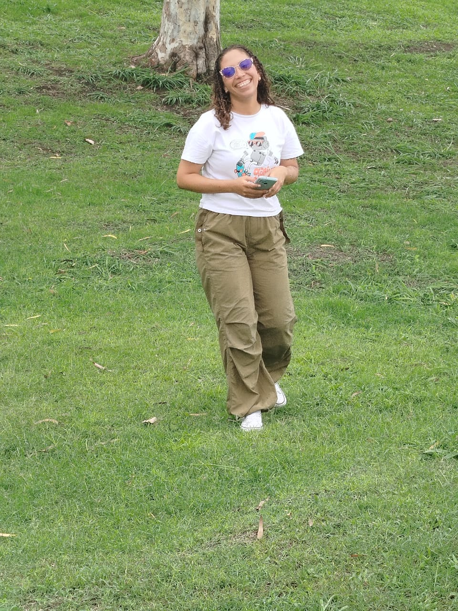
                `;
                }
                if ( idDesdeUrl === 18 ) {
                    contenidoDiv.innerHTML = `
                             <h1 class="text-center pb-2"><p class="my-soul-regular "> 30 Dias Para Enamorarte</p></h1>
                            <h3 class="text-center pb-2">Sentirme de nuevo como un niño 👦</h3>
                            
                        <div class="row">
                        <div class="col-sm-12 col-md-6 text-sm-start pb-2">Este día para mí fue muy importante, mi niño interior contigo se siente en paz, pero este día particularmente se sintió muy feliz, tal vez el detalle que me diste para muchos no les sea importante, pero a mí me encantó, fui demasiado feliz, el hecho de que me dieras este regalo me hizo saber que realmente me quieres, me entiendes y me escuchas. La verdad no todos hacen eso y me encanta completamente que lo hagas.</div>
                        

                        <div class="col-sm-12 col-md-6 text-sm-start pb-2">En pocas palabras, este llavero es mis medias de abejitas.</div>

                        <div class="col-sm-12 col-md-6 text-sm-start pb-2">Cuando estoy con alguien no me gusta hablar de mis relaciones pasadas porque pienso que estuve con ellas por algo y pienso que el pasado es el pasado, me enfoco más en lo que vivo con la nueva persona a mi lado, sin embargo, en relaciones pasadas me decían que madurara, que cambiara, que no podía tener esos gustos de niños. Eso personalmente me llena de muchas inseguridades y miedos. Pero tú, tú supiste que me gustaba y lo conseguiste para mí, eso lo valoro con todo mi corazón, me encanta ser yo mismo, pero más me encanta que te guste siendo yo mismo.</div>
                        
                        <div class="col-sm-12 col-md-6 text-sm-start pb-2">Me la paso todo el tiempo diciéndole a mi niño interior que esa persona que tanto anhelo que llegara y que tanto necesito llegó y llegó para quedarse. Te amo mucho Elimar, cada vez que hablo contigo amo como desnudo mi alma ante ti, como te cuento lo más íntimo de mis pensamientos, pero amo cuando tú escudriñas sin saberlo lo más íntimo en mí.</div>

                        <div class="col-sm-12 col-md-6 text-sm-start pb-2">Quiero a alguien en mi vida como tú, quiero a alguien que sepa cómo hacerme un mejor hombre sin cambiar mi esencia, que sepa corregirme sin herirme, que me enseñe sin ofender mi persona, te quiero a ti en mi vida y quiero que sepas, que todo lo que me des o hagas por mí de pronto puede que no te lo parezca, pero estas haciendo feliz a un niño que espero un regalo que nunca llegó, que espero una sorpresa que nunca se hizo, que espero unas felicitaciones que fueron reemplazadas por un “es tu deber”.</div>

                        <div class="col-sm-12 col-md-6 text-sm-start pb-2">Te amo y siempre que hagas mi niño interior feliz, seré especial contigo. Y te amaré todo lo que me ames</div>


                        </div>
                         `;
                }
                if ( idDesdeUrl === 19 ) {
                    contenidoDiv.innerHTML = `
                    <h1 class="text-center pb-2"><p class="my-soul-regular "> 30 Dias Para Enamorarte</p></h1>
                    <h3 class="text-center pb-2">La promesa no cumplida</h3>
                    
                    <div class="col-sm-12 col-md-6 text-sm-start pb-2">Este dia te hice una promesa, si, fue cuando comenzamos a hablar y a pasado tiempo de eso, pero no quiero dejar promesas sin cumplir, ni cosas al aire, quiero representar con esto que cada promesa que haga, que cada cosa que diga la pueda cumplir sin problemas por que mereces acción, ya muchas promesas has tenido.</div>
                    <div class="col-sm-12 col-md-6 text-sm-start pb-2">No quiero justificarme, pero el problema conmigo es que como sabes las cosas se me olvidan constantemente, no sé de verdad ni como me gradue jajaja. Pero hasta eso has cambiado en mi, mi falta de compromiso es muy evidente pero me has hecho pensar de manera diferente, ya quiero accionar cada que te prometa algo y que seas la razón de mi responsabilidad.</div>
                    <div class="col-sm-12 col-md-6 text-sm-start pb-2">Dijimos que comeríamos arroz chino y lo hicimos, más hoy toca comer cachapas 🤤cada cosa que dijimos que haríamos quiero hacerlas contigo, y esta carta es un fiel recordatorio de ello, se que hay muchas otras cosas que tal vez he dicho que aún no hemos hecho, pero quiero hacer todo contigo, quiero cada momento junto a ti y compartir todas las experiencias que podamos mi amor, por que cuando te digo que quiero pasar toda mi vida junto a ti, me refiero a todo, los dias felices, los tristes, las verdes y las maduras, todo, amor mio, quiero que sea junto a ti.</div>
                    <div class="col-sm-12 col-md-6 text-sm-start pb-2">Elimar quiero que seas tu mi esposa, quiero que seas tu la mujer de mi vida y no descansaré hasta que pueda ese sueño hacerse realidad, te amo.</div>
                    <div class="col-sm-12 col-md-6 text-sm-start pb-2">Así que hoy comeremos cachapas, muy probablemente el yo del presente ya te dijo que íbamos a salir, es que soy muy impaciente jajajaja. Si no puedes, tienes otros planes o estás muy cansada avisame y lo podemos reagendar, también si prefieres ir a otro sitio no tengo problema, solo quiero estar contigo mi amor y pasar cada instante junto a ti vida mía.</div>
                    <div class="col-sm-12 col-md-6 text-sm-start pb-2 bold">TE AMO ELIMAR.</div>
                    `;
                }
                 if ( idDesdeUrl === 20 ) {
                    contenidoDiv.innerHTML = `
                    <h1 class="text-center pb-2"><p class="my-soul-regular "> 30 Dias Para Enamorarte</p></h1>
                    <h3 class="text-center pb-2">La calma después de la tormenta</h3>
                    
                    <div class="col-sm-12 col-md-6 text-sm-start pb-2">Este día, debo admitir, para mi fue muy impresionante. El día de nuestra primera pelea. Quizás te preguntes ¿Por que en una carta romántica tomó este día?, la verdad esta, nuestra primera pelea, me dio mucha impresión por cómo lo manejamos, anteriormente cuando discutía con mis anteriores parejas, era algo demasiado inmaduro, admito que no soy fácil de manejar en ocasiones, pero ese dia me demostraste que hasta en las discusiones eres diferente y que no quieres dejarme ir. </div>
                    <div class="col-sm-12 col-md-6 text-sm-start pb-2">Como olvidar ese momento donde se me iba a salir el corazón pensando que te irías de mi vida, por fuera haciéndome el duro pero por dentro sufriendo al imaginar que ya no te tendría a mi lado.</div>
                    <div class="col-sm-12 col-md-6 text-sm-start pb-2">No mostraste debilidad, demostraste comprensión. Lo que más me impresionó es que tu entendiste que ambos somos imperfectos y que hablando podemos solucionar las cosas.</div>
                    <div class="col-sm-12 col-md-6 text-sm-start pb-2">Tal vez no tenga mucha experiencia viviendo con alguien, pero he entendido que cuando hablas con el corazón y hay comprensión de ambas partes, se solucionaran los problemas, ambos hemos pasado por malas relaciones, ahora nos toca amarnos con todo lo que tenemos. </div>
                    <div class="col-sm-12 col-md-6 text-sm-start pb-2">Si paso un momento sin ti, me siento mal, me he vuelto adicto a tus besos, dependiente de tus abrazos, siento que respiro cuando tu me hablas, eres demasiado especial para mi, las peleas sucederán, las discusiones estarán, pero te demostrare que realmente quiero estar contigo luchando por lo nuestro.</div>
                    <div class="col-sm-12 col-md-6 text-sm-start pb-2">Este dia es un recordatorio de que no hay problema ni discusión que no podamos enfrentar, siempre y cuando los dos queramos continuar.</div>
                    <div class="col-sm-12 col-md-6 text-sm-start pb-2 bold">Te amo y realmente anhelo pasar el resto de mi vida contigo, porque sé  que daremos el todo el uno por el otro</div>

                    `;
                }
                if ( idDesdeUrl === 21 ) {
                    contenidoDiv.innerHTML = `
                                        <h1 class="text-center pb-2"><p class="my-soul-regular "> 30 Dias Para Enamorarte</p></h1>
                                        <h3 class="text-center pb-2">La labia:</h3>
                                        
                                         <div class="col-sm-12 col-md-6 text-sm-start pb-2">Como olvidar este dia jajaja, el dia donde me lanzaste tu primera labia de mujer, si lo se, muchas veces me hago el pendejo, pero noto ciertas cosas, ahora que leo nuestras conversaciones y puedo entender cómo nos gustamos y como nos coqueteabamos cosas que para ser sincero antes me costaba notar.</div>
                                        
                                         
                                         <div class="col-sm-12 col-md-6 text-sm-start pb-2">Es que mira el “Te ganaras un problemon con tu novia” jajajaja que cosas uno dice. Me da mucha risa porque siempre dices que yo tengo mucha labia, mira la tuya mujer jajajaja. Te amo, porque desde el inicio me has demostrado que en verdad me amas, que realmente quieres estar conmigo y pese a tal vez tener mejores opciones, me escoges a mi, gracias por eso te amo mucho.</div>
                                         <div class="col-sm-12 col-md-6 text-sm-start pb-2">Amo estos pequeños momentos llenos de inocencia, esos dulces instantes de tener la incertidumbre de saber si nos gustabamos o era un simple capricho, de pensar si éramos sinceros o esclavos de una mentira de nuestra mente.</div>
                                         <div class="col-sm-12 col-md-6 text-sm-start pb-2">Una de las cosas que más amo de ti, es lo temeraria que eres, a veces me pregunto si le tienes miedo a algo, por que eres demasiado valiente, te enfrentas a todo lo que se venga y eso lo admiro mucho pues no eres de esos que ven los obstáculos como el fin sino como un reto.</div>
                                         <div class="col-sm-12 col-md-6 text-sm-start pb-2">Gracias por entrar a mi vida mi amor, siempre seras especial, y estos momentos formarán parte de nuestras historias que le contaremos a los nietos y a nuestros amigos cuando nos pregunten. Estos momentos que sirvieron como cimientos para formar la hermosa relación que ahora tenemos, te amo hermosa reina mia.</div>
                     `;
                }
                  if ( idDesdeUrl === 22 ) {
                    contenidoDiv.innerHTML = `
                                        <h1 class="text-center pb-2"><p class="my-soul-regular "> 30 Dias Para Enamorarte</p></h1>
                                        <h3 class="text-center pb-2">Reinicio:</h3>
                                        
                                        <div class="col-sm-12 col-md-6 text-sm-start pb-2">Este día es uno de mis favoritos, el día en que por primera vez te abracé, ese día fue una mezcla de emociones tan intensas que desconcertaba mi mente. Sentía inseguridad, pues no soy una persona de abrazar, sentía miedo, pues no sabia si te gustaría abrazarme, sentía felicidad pues en ese punto ya me llamabas la atención y poder llegar a sentir un abrazo de ti era para mi como llegar al cielo.</div>                 
                                        <div class="col-sm-12 col-md-6 text-sm-start pb-2">Ahora, siempre que me siento abrumado, me siento agobiado por esta dura vida, un abrazo tuyo me reconforta. Es como si no existiera nada en este mundo, como si todo se detuviera y solo estamos tú y yo. Se que en muchas oportunidades me has dicho cómo te sientes con mis abrazos, pero nunca te he dicho como me siento yo, honestamente tus abrazos reinician mi vida, es como si se me olvidara todo lo que estoy pasando, por eso necesito que en nuestro vivir juntos nunca dejes de abrazarme, pues me siento seguro, me siento amado, me siento lleno de fuerza y vigor.</div>
                                        <div class="col-sm-12 col-md-6 text-sm-start pb-2">Tal vez al momento del abrazo no te digo nada, pero me encanta sentir tu respiración en mi pecho, me encanta acariciar tu cabeza mientras escuchas los latidos de mi corazón, el cual se acelera de felicidad al verte, me encanta pasar mi mano por todo tu cuerpo mientras tus dos brazos se aferran a mi, amo cuando nos abrazamos fuerte y nuestras almas se unen en ese abrazo que cada dia que paso sin ti me consume el no tenerlo.</div>
                                        <div class="col-sm-12 col-md-6 text-sm-start pb-2">Sinceramente soy una persona que no abraza, los abrazos no me gustan, pero cuando tu me das un abrazo no puedo dejar de pensar en el, odio todo ese tiempo que pasó sin abrazarte, tú cambiaste por completo mi percepción de los abrazos ( Siguen sin gustarme la verdad pero los tuyos me encantan ) cuan droga más adictiva quiero cada dia una dosis de tus abrazos, pues me he vuelto adicto a ellos.</div>
                                        <div class="col-sm-12 col-md-6 text-sm-start pb-2">No me malinterpretes con lo que diré, pues quiero cada parte del vivir contigo, pero esta, esta es una de mis partes favoritas y más anheladas de vivir contigo, cada dia luego del trabajo recibir un abrazo tuyo, cada noche dormir abrazado a ti, cada mañana despertar abrazandote, cada vez que cocines llegar detrás de ti y abrazarte, después de una pelea, después de un momento de felicidad, en todo momento, anhelo abrazarte, te amo mucho Elimar, y no, no eres la unica que quiere convertirse en una garrapata pegada a mi, quiero ser una garrapata pegada a ti, abrazarte tanto que me quede el olor a ti.</div>
                                        <div class="col-sm-12 col-md-6 text-sm-start pb-2">ME ENCANTAS, Y QUIERO ABRAZARTE HASTA QUE LO ENTIENDAS, QUE NO PUEDO VIVIR SIN UN ABRAZO TUYO.</div>
                     `;
                }
                if ( idDesdeUrl === 23 ) {
                    contenidoDiv.innerHTML = `
                                        <h1 class="text-center pb-2"><p class="my-soul-regular "> 30 Dias Para Enamorarte</p></h1>
                                        <h3 class="text-center pb-2">Solo tu me haces ser asi:</h3>
                                        
                                        <div class="col-sm-12 col-md-6 text-sm-start pb-2">Recuerdo que me enviaste este video y no se pero se sintió especial. Hace un tiempo fui romántico, pero por malas relaciones me cerré en muchos aspectos, y pensé, ¿Para qué ser romántico si de igual forma nadie lo valora?, pero tenía que llegar doña ojos hermosos, sonrisa preciosa, graciosa, inteligente, con buena sazón, besos deliciosos a cambiar mi manera de pensar.</div>                 
                                        <div class="col-sm-12 col-md-6 text-sm-start pb-2">Por aquí te dejo el link para que recuerdes el video, solo tienes que <a href="https://vt.tiktok.com/ZShWF5md8/">presionar aquí.</a></div> 
                                        <div class="col-sm-12 col-md-6 text-sm-start pb-2">Para mi, ser cursi y romántico era cosa del pasado, en esta época eso no se valora, pero tu y solo tú puedes hacerme sentir de esta manera, tan enamorado que todo aquello muerto en mi, hoy está vivo nuevamente. </div> 
                                        <div class="col-sm-12 col-md-6 text-sm-start pb-2">Esa parte de mi tu la tienes y solo tu la tendrás, pues eres la única que con su forma de ser, sin saberlo te lo has ganado y solo a ti te pertenece. La verdad me hizo sentir triste el hecho de que no te hayan tratado así de bonito, pero quiero que sepas que deseo hacerlo todo de manera diferente, hacerte sentir la mujer más amada será mi deber, siempre recordártelo con una flor, y que puedas sentir como exponencialmente crece mi amor por ti.</div> 
                                        <div class="col-sm-12 col-md-6 text-sm-start pb-2">Quiero con todo mi corazón ser el hombre que te dedique poesía, el que te dedique canciones, el que te de flores, el que el día de tu cumpleaños te agradezca el hecho de nacer y cambiar mi vida. Es evidente que eres una gran y hermosa persona, tan amable, tan comprensiva, te interesa tanto que todos a tu alrededor estén bien, eres tan excelente madre, eres tan trabajadora, tan preciosa, tan de todo que mereces que te traten de la manera más preciosa de todas, pues tienes un corazón tan bonito que estoy super agradecido con Dios de tener aunque sea un pedacito de él.</div> 
                                        <div class="col-sm-12 col-md-6 text-sm-start pb-2">Quiero decirte mi vida, que si usted me lo permite, seré el hombre que le haga sentir como si estuviésemos en la primera cita. TE AMOOOOO.</div> 
                                        `;
                }
                if ( idDesdeUrl === 24 ) {
                    contenidoDiv.innerHTML = `
                                        <h1 class="text-center pb-2"><p class="my-soul-regular "> 30 Dias Para Enamorarte</p></h1>
                                        <h3 class="text-center pb-2">Mi seguridad:</h3>
                                        
                                        <div class="col-sm-12 col-md-6 text-sm-start pb-2">Tal vez estés pensando “¿Qué le pasa a Rafael?, está escribiendo cartas de mensajes extraños”, y si, lo estoy haciendo, pero es que para mi, cada momento y cada situación que paso contigo es única, y aún con mensajes como este veo cosas hermosas en nuestra relación.</div>            
                                        <div class="col-sm-12 col-md-6 text-sm-start pb-2">Pero bueno en fin me explico, como verás en este punto de la conversación, ya tenía bastante confianza contigo, sin embargo, soy una persona que me cuesta mucho hablar, por lo de mi inseguridad, pero, aun con todo esto solo tu me generas la confianza de ser yo mismo.</div>               
                                        <div class="col-sm-12 col-md-6 text-sm-start pb-2">Por mucho tiempo, me he sentido que soy un desastre en cuanto a mi personalidad, pues siento que intento ser lo diferente a lo que realmente soy para agradar a los demás, pero tu me invitas a tener la confianza de sentirme como yo mismo, sin máscaras, sin apariencias, sin mentiras, puedo ser yo mismo sin miedo al rechazo, más bien a veces te unes a mis locuras.</div>               
                                        <div class="col-sm-12 col-md-6 text-sm-start pb-2">Me da risa por que nunca habia sentido tanta confianza en hablar de esta manera con alguien, y no, no hablo solo de hablar caliente Jajajaja, hablo de profundizar a tal punto de que nuestras almas sean las que conversen en medio de nuestras charlas, tenemos ese tipo de conexión que no sucede todo el tiempo y eso me encanta en nosotros pues forma parte vital de mi dia.</div>               
                                        <div class="col-sm-12 col-md-6 text-sm-start pb-2">Solo tú me das seguridad y te agradezco por eso, porque siempre que tengo miedo de hacer algo y no te tengo cerca me digo a mi mismo: “¿Qué carajos?, a Elimar no le daría miedo esto, mas bien me diría que soy capaz.” gracias por ser esa seguridad en mi vida, la seguridad que solo tus besos, tus caricias y tu constante ánimo me da la seguridad de ser el hombre que soy. TE AMOOOO.</div>               
                                        `;
                }
                if ( idDesdeUrl === 25 ) {
                    contenidoDiv.innerHTML = `
                                        <h1 class="text-center pb-2"><p class="my-soul-regular "> 30 Dias Para Enamorarte</p></h1>
                                        <h3 class="text-center pb-2">La celosita que tanto amo:</h3>
                                        
                                        <div class="col-sm-12 col-md-6 text-sm-start pb-2">Este dia lo escogí porque particularmente me dio mucha risa, obviamente ese dia lo disimulaste mucho pero me dio mucha risa el hecho de que a pesar que solo hablamos unos días me celabas, ese ligero aire de celos lo oli a kilómetros jajajaja. Se que tu lo sabes, pero específicamente lo hice para ver tu reacción, pero pensé que no estabas celosa ni nada, pero hoy, que puedo leer estos mensajes no puedo creer lo ciego que era Jajajaja.</div>            
                                        <div class="col-sm-12 col-md-6 text-sm-start pb-2">Es increíble y sigo sin entender como me celas como si tuviera muchas pretendientes, como si fuera el hombre más atractivo del mundo, amor, no se ni porque te guste a ti, cómo voy a andar atrás de otras, me encantas tu y siempre eres tu. </div>            
                                        <div class="col-sm-12 col-md-6 text-sm-start pb-2">Se que aunque te lo diga mil veces no me vas a dejar de celarme por que es tu manera de preservar lo tuyo, pero algo si te digo, soy tuyo y de nadie más, para que mirar para otros lados cuando en frente de mi tengo lo inimaginable, tengo a la mujer más preciosa de todas, la que se esfuerza a diario por verme feliz, la que siempre esta para mi, la que me escucha, la que me ayuda a ser mejor y constantemente me ayuda a entender que soy capaz de hacer una infinidad de cosas.</div>            
                                        <div class="col-sm-12 col-md-6 text-sm-start pb-2">Podrás celarme constantemente, pero nunca tendrás una noticia mía de que anduve con otra o algo por el estilo, siempre me tendrás atento y pensando en ti, por que tu y solo tu habitas en mis pensamientos y en mi corazón.</div>            
                                        <div class="col-sm-12 col-md-6 text-sm-start pb-2">Te amo mucho mi Eli, y aunque me celes, siempre estare para ti, gracias por preocuparte por que este a tu lado, aquí estoy y aqui me quedare corazón mío, para siempre a tu lado mi vida.</div>            
                                        
                                                 `;
                }
                if ( idDesdeUrl === 26 ) {
                    contenidoDiv.innerHTML = `
                                        <h1 class="text-center pb-2"><p class="my-soul-regular "> 30 Dias Para Enamorarte</p></h1>
                                        <h3 class="text-center pb-2">Versos que matan:</h3>
                                        
                                        <div class="col-sm-12 col-md-6 text-sm-start pb-2">En este dia me escribiste estas palabras tan hermosas, las recuerdo como nunca pues nunca me habían escrito algo tan bonito, tan poético y tan lleno de amor real. Siempre fui yo el que, en mis relaciones pasadas, era el que decía cosas bonitas o el que les daba versos llenos de amor a mis ex, pero quiero demostrar una vez más que contigo todo es diferente, hasta lo que escribimos.</div>
                                        <div class="col-sm-12 col-md-6 text-sm-start pb-2">La verdad es que tenerte de mi lado hablando tan hermoso me hace sentirme el hombre más afortunado del universo, momentos como este viven inmortalizados en mi mente y en mi corazón.</div>
                                        <div class="col-sm-12 col-md-6 text-sm-start pb-2">Es increible como todo de ti me enamora, como hablas, como te expresas, cada una de tus expresiones, cada uno de tus gestos, tu manera de escribir, eres demasiado importante para mi, a tal punto de que conmueves y me enloqueces al mismo tiempo cuando me demuestras estas encantadoras muestras de amor.</div>
                                        <div class="col-sm-12 col-md-6 text-sm-start pb-2">Siendo sincero le pedí a Dios una mujer así, una mujer que, con sus palabras me hiciera sentir el hombre más amado de todos. Anteriormente te comente que me costaba ser el hombre romántico que era antes, pero esto, esto particularmente fue lo que hizo resucitar a ese hombre detallista, el que tu dieras el primer paso me hizo sentir nuevamente aquel que está dispuesto a darlo todo por ese alguien especial, y ese alguien especial eres tu corazon, que me enamoras con el simple hecho de existir, te amo demaciado Elimar, no hay un dia en que no pueda pensar en ti.</div>
                                        <div class="col-sm-12 col-md-6 text-sm-start pb-2">Te haré una poesía, no como las que te he dicho Jajajaja, esta si:</div>
                                        <div class="col-sm-12 col-md-6 text-sm-start pb-2"><b><i>“Impresionado estoy del impacto que has causado en mí, a tal punto que todo se relaciona a tí.</i></b></div>
                                        <div class="col-sm-12 col-md-6 text-sm-start pb-2"><b><i>El caminar, el sentir, el amar y el reír. Cada uno es una melodía que al escucharla se relaciona a tí.</i></b></div>
                                        <div class="col-sm-12 col-md-6 text-sm-start pb-2"><b><i>Cualquiera pensaría que la distancia, apaga el amor más ferviente, pero contigo todo es distinto, cada minuto que pasa solo pienso en tenerte.</i></b></div>
                                        <div class="col-sm-12 col-md-6 text-sm-start pb-2"><b><i>No sé el porvenir, ni el futuro de nuestros pasos, lo único que sé es que puedo estar seguro entre tus brazos.</i></b></div>
                                        <div class="col-sm-12 col-md-6 text-sm-start pb-2"><b><i>Solo anhelo que nuestra vida juntos sea lo que siempre soñamos, pues se que seré feliz, cada mañana diciendo que Te Amo.”</i></b></div>
                                        
                                        `;
                                        
                }
                 if ( idDesdeUrl === 27 ) {
                    contenidoDiv.innerHTML = `
                                        <h1 class="text-center pb-2"><p class="my-soul-regular "> 30 Dias Para Enamorarte</p></h1>
                                        <h3 class="text-center pb-2">Un equipo somos:</h3>
                                        
                                        <div class="col-sm-12 col-md-6 text-sm-start pb-2">Este dia fue un dia muy vulnerable para ti, este fue el dia en que estabas pasando por problemas con uno de tus ex y estabas muy agobiada, en medio de ese agobio me dijiste que si quería irme lo entenderías pues sabias que era mucho e incluso en una oportunidad me dijiste que eras un desastre. </div>
                                        <div class="col-sm-12 col-md-6 text-sm-start pb-2">Mi vida, un equipo somos, en el momento en que decidiste ser amorosa conmigo fue el momento en el que decidí amarte y en el momento en que me aceptaste tal y como soy, fue el momento en que decidí quedarme, sé que es mucho lo que enfrentas, y eres demasiado capaz de enfrentar cualquier dificultad, pero has peleado mucho sola, quiero decirte a través de esta carta que quiero batallar contigo, qué más da si es mucho lo que hay que enfrentar, quiero enfrentar lo que sea contigo. </div>
                                        <div class="col-sm-12 col-md-6 text-sm-start pb-2">Siempre te lo he dicho, contigo me siento muy seguro y no solo eso, me has ayudado a enfrentar mis demonios, por lo que quiero ayudarte a enfrentar los tuyos, quiero ayudarte a salir adelante, no se como por que la verdad no se nisiquiera como salir adelante yo solito jajajajaja, pero quiero que juntos encontremos la respuesta de las cosas, quiero que juntos podamos enfrentar los gigantes que quieran asediar nuestra vida. </div>
                                        <div class="col-sm-12 col-md-6 text-sm-start pb-2">¿Que me vaya de tu vida? Ja, ya me ilusionaste, ya las cosas no son asi de faciles Jajajajaja, quiero mi vida contigo Elimar, no es un simple sentimiento pasajero, quiero todo contigo, quiero vivir cada momento de alegría y de tristeza que tengas, cada victoria y cada derrota, las verdes y las maduras, todo lo quiero a tu lado mi vida preciosa y quiero sobre todo quedarme a tu lado. </div>
                                        <div class="col-sm-12 col-md-6 text-sm-start pb-2">Te amo demasiado y tomo tu palabra, nadie que no seas tu misma podrá separarme de ti. Bueno, solo Dios, de ahí más nadie vida mia </div>
                                        `
                                        
                }
                    if ( idDesdeUrl === 28 ) {
                    contenidoDiv.innerHTML = `
                                    <h1 class="text-center pb-2"><p class="my-soul-regular "> 30 Dias Para Enamorarte</p></h1>
                                        <h3 class="text-center pb-2">Un audio inolvidable:</h3>
                                        <audio controls class="text-center pb-2 centro">
                                          <source src="aud/28.opus" type="audio/mpeg">
                                        </audio>
                                        <div class="col-sm-12 col-md-6 text-sm-start pb-2">Cómo olvidar este día, el día en el que por primera vez me enviaste un audio con voz de niña. Es que Diooossss, no se que tienen estos audios que me matan tanto, me derriten, es que tu me hablas asi todo cuchi y yo siento que el corazón se me va a salir de pana, me encantas demasiado.</div>
                                        <div class="col-sm-12 col-md-6 text-sm-start pb-2">Quién lo diría, la chica ruda, la puedo con todo, la que se enfrenta a los problemas, la que si la buscas la encuentras, esa misma chica, me iba a estar mandando estos audios jajajaja, no me burlo de ti, es que de verdad estoy impresionado.</div>
                                        <div class="col-sm-12 col-md-6 text-sm-start pb-2">Me encantas mucho Elimar y este tipo de audios me demuestran que tu eres una persona que me trata distinto, anteriormente me decían Rafa madura, no voy a estar haciendo esas cosas, pero el ver que tu lo hagas para mi es de suma alegría, pues veo en ti todo lo que le pedí a Dios y todo lo que siempre quise.</div>
                                        <div class="col-sm-12 col-md-6 text-sm-start pb-2">Por si no te lo había dicho ya, amo demasiado tu voz, amo cuando me dices que me amas, amo cuando dices que te encantan mis abrazos, amo cuando dices que quieres dormir conmigo, amo cuando dices que quieres una vida conmigo, te amo demasiado Elimar, y tu voz para mi es medicina, es sentirme más vivo y enamorado de ti que nunca, tu voz me da paz y me despierta al mismo tiempo, es increible como todo lo que hay en ti mueve todo lo que hay en mi, compartir este tipo de momentos únicos son cosas que no esperaba pero que agradezco a Dios por permitirme vivirlos contigo.</div>
                                        <div class="col-sm-12 col-md-6 text-sm-start pb-2">De verdad que quiero despertar cada dia y poder escuchar esa voz y esa manera tuya de hablar, de verdad que sería la manera más preciosa de despertar a tu lado amor mio, si te gusto esta carta por favor enviame una nota de voz hablando de esta manera toda cuchi que me encanta, es una gran felicidad y como una caricia a mis oídos el que me envies audios asi, te amo reina mía</div>
                     `;
                }
                if ( idDesdeUrl === 29 ) {
                    contenidoDiv.innerHTML = `
                         <h1 class="text-center pb-2"><p class="my-soul-regular "> 30 Dias Para Enamorarte</p></h1>
                                        <h3 class="text-center pb-2">Mi confidente:</h3>
                                        
                                        <div class="col-sm-12 col-md-6 text-sm-start pb-2">Este día en lo personal es super especial para mi, se que lo digo mucho, pero en definitiva eres totalmente diferente al resto, te amo porque marcas completamente la diferencia y te explico por que. La verdad soy una persona super tímida y reservada, no acostumbro a hablar de las cosas que pasan por mi mente por que no se, pienso que a nadie le debería importar, de hecho, mis pasadas relaciones no querían ni que les hablara de cómo me sentía, a veces ni me escuchaban, pero tu eres unica.</div>
                                        <div class="col-sm-12 col-md-6 text-sm-start pb-2">La verdad nunca había hablado de lo que más me agobiaba en esta vida, si, he hablado con algunas personas, pero con nadie me sentí tan seguro y tan abierto de hablar algo con alguien, es que cuando hablo contigo hay tanta conexión, hay tanta magia, pasa algo tan bonito, se podría decir que estamos en la misma sintonía, con la misma vibra y amo eso.</div>
                                        <div class="col-sm-12 col-md-6 text-sm-start pb-2">Contigo ninguna conversación es banal o vacía, contigo todo tiene importancia, tanto así que te has convertido en mi confidente, en mi compañera de aventuras, en la mujer que dia a dia solo logra hacer que la ame mas que el dia anterior, no solo me siento en confianza de hablar cualquier de mis pensamientos más profundos contigo, si no que me siento escuchado por ti, la verdad nadie nunca se había tomado la dedicación de escuchar cada estupidez que sale de mi boca.</div>
                                        <div class="col-sm-12 col-md-6 text-sm-start pb-2">Detrás de ese hombre que siempre busca escucharte y te mima y te dice que te ama hay un niño que nunca fue tomado en cuenta, por el contrario, en muchas oportunidades me ignoraban o no les importa lo que tenía que decir, gracias por ser mi confidente.</div>
                                        <div class="col-sm-12 col-md-6 text-sm-start pb-2">Sé que estás pasando por mucho y sobre todo en batallas mentales, pero amo que aun sobre todas las cosas que haces o pasas, me otorgas un poco de tiempo solo para que pueda conversar contigo o cualquier cosa, eso lo amo y siempre lo haré. El cariño, comprensión y paciencia que tu me demuestras, lo llevo siempre en mi corazón, a tal punto que ya es parte de mi vida diaria, Te amo demasiado eliminar.</div>
                     `;
                }
                if ( idDesdeUrl === 30 ) {
                    contenidoDiv.innerHTML = `
                                        <h1 class="text-center pb-2"><p class="my-soul-regular "> 30 Dias Para Enamorarte</p></h1>
                                        <h3 class="text-center pb-2">De tu mano soy feliz:</h3>
                                        
                                        <div class="col-sm-12 col-md-6 text-sm-start pb-2">Uno de los días que más recuerdo con gran felicidad y nostalgia es este, el primer día que te tomé de la mano. Ya sabíamos que nos gustabamos, recuerdo que incluso el hecho de que yo te mirara a los ojos te hacía sentir nerviosa, y lo que mas me encanta es que ahora esa mirada de timidez ahora es una mirada llena de amor, como me encanta mirarte a los ojos y sentir a través de ellos cuánto me amas amor mio.</div>
                                        <div class="col-sm-12 col-md-6 text-sm-start pb-2">Recuerdo que ese dia estaba muy nervioso, aun ni te había besado, pero el que tomaras mi mano, me hiciste sentir como si se tratara de un amor adolescente, en el que no sabes si le gustas o no, si hacer algo como tomar la mano del otro esta bien o es muy apresurado, me encantas y es impensable las cosas que me haces sentir, como te amo cielo mio.</div>
                                        <div class="col-sm-12 col-md-6 text-sm-start pb-2">Ahora me encanta ir tomado de tu mano, pues eres mi lugar seguro y tomado de tu mano me siento no guiado, me siento acompañado a enfrentar la tormenta que venga, te amo y para mi estar tomado de tu mano es una de mis mayores felicidad, como te amo mi amor.</div>
                                        <div class="col-sm-12 col-md-6 text-sm-start pb-2">Deseo que siempre estemos así, tomados de la mano enfrentando los problemas, aun cuando estemos viejitos tomarnos de la mano y enfrentar la vida juntos, pues eres mi camino, mi seguridad, mi ayuda, mi amor, la que siempre está aun cuando todos se van, la que me hace reir, la que me hace sentir, la que me hace recapacitar, la que me hace crecer, en fin, eres la mujer que amo.</div>
                                        <div class="col-sm-12 col-md-6 text-sm-start pb-2">Gracias por ser el amor de mi vida, gracias por amarme tanto y gracias por que de tu mano soy feliz.</div>
                     `;
                }
                if ( idDesdeUrl === 31 ) {
                    contenidoDiv.innerHTML = `
                                        <h1 class="text-center pb-2"><p class="my-soul-regular "> 30 Dias Para Enamorarte</p></h1>
                                        <h3 class="text-center pb-2">Juntos enfrentaremos lo que sea:</h3>
                                        
                                        <div class="col-sm-12 col-md-6 text-sm-start pb-2">Recuerdo este día, un día en donde realmente pude darme cuenta que nuestra relación va más allá que un simple romance, estamos formando algo hermoso lo cual deseo con todo mi corazón que sea la relación más hermosa de todas.</div>
                                         <div class="col-sm-12 col-md-6 text-sm-start pb-2">Este dia estabas cargada de muchas cosas, recuerdo que era por una discusion que habias tenido con tu familia y no querías salir, no querías hablar con nadie, pero tienes un casi novio muy salio jajajaja. Ese día sin importar lo que quisieras, comer, dormir, hablar, solo quedarnos callados, solo abrazarnos, lo que fuera, quería estar ahí para ti, porque sé que harías lo mismo por mi, desde que te conocí le has dado días llenos de luz a una vida que solo ha estado en tinieblas, por ello quiero ser el color en tus dias grises.</div>
                                          <div class="col-sm-12 col-md-6 text-sm-start pb-2">Juntos enfrentaremos cualquier cosa amor mío, quiero que sepas que siempre estare para ti y te amo demasiado, jamas pense sentir una conexión con alguien a tal punto de sentir su dolor cuando ella misma lo pasa, quiero ser tu presente y tu futuro, el pasado lo dejamos atrás amor mio.</div>
                                           <div class="col-sm-12 col-md-6 text-sm-start pb-2">Muchas veces no se hacer las cosas, es decir, te veo molesta, triste, cargada y no se que hacer, pero es increible como sin saber que hacer, solo abrazandote, escuchándote o haciendome el chistoso (que es lo que siempre se hacer como el payaso que soy jajaja) se te arregla el dia, tambien siento lo mismo, eres como el cargador de mi bateria, cuando estoy en 0% siempre me haces volver al 100%, solo con una sonrisa puedes desconcertar mi mundo.</div>
                                           <div class="col-sm-12 col-md-6 text-sm-start pb-2">No se muchas cosas, en cuanto a las relaciones y la vida, y ciertamente no tengo todas las respuestas, pero si se algo, y lo se muy bien, nos complementamos totalmente y se que juntos, enfrentaremos lo que sea. Te amo.</div>
                     `;
                }
                 if ( idDesdeUrl === 1 ) {               
                         contenidoDiv.innerHTML = `
                
                    <h1 class="text-center pb-2"><p class="my-soul-regular "> 30 Dias Para Enamorarte</p></h1>
                    <h3 class="text-center pb-2">La primer dosis de mi mayor adicción:</h3>
                    
            <div class="row">
                <div class="col-sm-12 col-md-6 text-sm-start pb-2"Tus abrazos me reconfortan, tu mirada me mata, tus audios me derriten, pero soy completamente adicto a tus besos. En ellos encuentro eso que siempre necesite, una mezcla de paz, amor, calma, satisfacción, me siento como en las nubes, como cuando pruebas el dulce más rico, es como cuando encuentras el chocolate mas rico, sin saberlo, sin nunca haberlo probado pero te encanta, así me siento cuando te beso. </div>
                
                <div class="col-sm-12 col-md-6 text-sm-start pb-2">Ese dia para mi fue demasiado hermoso, compartí contigo uno de los días más inolvidables que pueda tener en mi vida, nos divertimos, comimos, te vi bailar (por que no bailo), y a pesar que ninguno de los dos queríamos ir a esa fiesta la pasamos excelente. Pasar esos minutos junto a ti en aquel sitio aparte y abrazarte mientras hablábamos me causa mucha nostalgia. Ese día hablamos por horas sin que nos importara lo que dijeran, no habíamos hablado tanto antes y para mi de verdad que ese día fue mágico.</div>
               
                
                <div id="carouselExampleIndicators" class="carousel slide col-sm-12 col-md-6 text-sm-start pb-1 pt-3" data-bs-ride="carousel">

                    <div class="carousel-indicators">
                        <button type="button" data-bs-target="#carouselExampleIndicators" data-bs-slide-to="0" class="active" aria-current="true" aria-label="Slide 1"></button>
                        <button type="button" data-bs-target="#carouselExampleIndicators" data-bs-slide-to="1" aria-label="Slide 2"></button>
                        <button type="button" data-bs-target="#carouselExampleIndicators" data-bs-slide-to="2" aria-label="Slide 3"></button>
                        <button type="button" data-bs-target="#carouselExampleIndicators" data-bs-slide-to="3" aria-label="Slide 3"></button>
                        
                        
                    </div>
                    <div class="carousel-inner">
                        <div class="carousel-item active">
                        
                        </div>
                        <div class="carousel-item">
                        
                        </div>
                        <div class="carousel-item">
                        
                        </div>
                        <div class="carousel-item">
                        
                        </div>
                    </div>
                    <button class="carousel-control-prev" type="button" data-bs-target="#carouselExampleIndicators" data-bs-slide="prev">
                        <span class="carousel-control-prev-icon" aria-hidden="true"></span>
                        <span class="visually-hidden">Anterior</span>
                    </button>
                    <button class="carousel-control-next" type="button" data-bs-target="#carouselExampleIndicators" data-bs-slide="next">
                        <span class="carousel-control-next-icon" aria-hidden="true"></span>
                        <span class="visually-hidden">Proximo</span>
                    </button>
                    </div>
            </div>
             <div class="col-sm-12 col-md-6 text-sm-start pb-2"> Luego sucedió, el beso bajando de la fiesta del primero de mayo fue fantástico, la verdad no sabia si te gustaba o si no, pero luego de ese beso no quedaron dudas, estamos enamorados el uno del otro, para mi abrazarte mientras íbamos en esa buseta mientras cantabamos salsa y te miraba con amor es otro de los momentos que no salen de mi mente, me encantas y en cada beso que me das recuerdo con anhelo esos días.</div> 
             <div class="col-sm-12 col-md-6 text-sm-start pb-2"> Recuerdo que luego me decias que me quedara, yo la verdad no sabia que hacer, estaba dudando pues no sabía si quedarme o irme, pero decidí elegir lo que siempre quiero elegir, quedarme siempre a tu lado, luego el beso en aquel callejón, Dios, a mi me encanto ese beso, fue uno de los mejores besos que pude tener en la vida, como me encantan tus besos, tus caricias, tus abrazos, todo lo que proviene de ti me encanta.</div> 
             <div class="col-sm-12 col-md-6 text-sm-start pb-2"> Me encanta cuando me besas, por que la verdad es que me besas como nadie me había besado, con aquel amor y pasión que nunca había sentido, la verdad puede pasar lo que sea pero los besos que me das, es como si fueran la medicina para todos mis males, aunque a veces hagan que se levante panfilo Jajajaja. Amo besarte, y aunque he besado muchas veces contigo aprendí que no importa cuanto pienses que lo haces bien o mal, solo importa hacerlo de corazón, hacerlo rápido no vale de nada, todo con calma da mejores resultado, aprendi tambien que aun pueden haber cosas que me hagan querer terminar la jornada laboral rapido, solo para que me des uno de esos besos que tanto me encantan.</div> 
             <div class="col-sm-12 col-md-6 text-sm-start pb-2"> Te amo demasiado mi Elimar.</div> 
                `;
                 }
                if ( idDesdeUrl === 2 ) {               
                         contenidoDiv.innerHTML = `
                
                    <div class="text-center mb-3">
                        <h1 class="text-center pb-2"><p class="my-soul-regular "> 30 Dias Para Enamorarte</p></h1>
                                        <h3 class="text-center pb-2">El dia en que te escogí:</h3>
                                        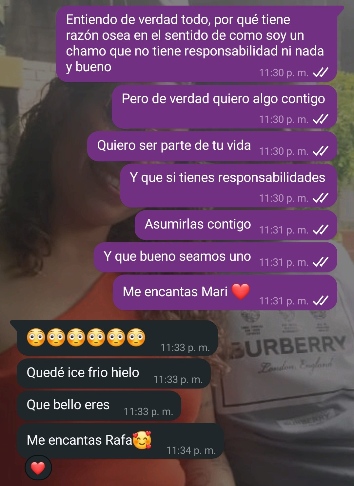
                                        <div class="col-sm-12 col-md-6 text-sm-start pb-2"Recuerdo este mensaje como si fuera ayer, fue una de las pocas veces en las que realmente se lo que quiero. Recuerdo que en esta oportunidad me dijiste que tenias muchos compromisos, tus hijas, tu trabajo, tus estudios, tantas cosas eran que pensaste que tal vez nadie te querría románticamente hablando, pero yo me moría de las ganas por ser ese al que tú llamarás “mi amor”.</div>
                                         <div class="col-sm-12 col-md-6 text-sm-start pb-2">Mientras que tu me escojas yo siempre te elegiré, pues de tu lado siento que estoy en el mismo cielo y en la tierra al mismo tiempo, te admiro tanto vida mía pues tienes una gran destreza, siempre veo como dices que simplemente eres una mamá y ya, pero me parece fantástico tu manera de hacer mil cosas y aun tener tiempo para mi, me encantas, en definitiva te elegiría una y mil veces, quizás otras mujeres puedan tener diferencias contigo, pero hay un pequeño detalle, ninguna de ellas eres tú, ninguna se compara a ti.</div>
                                         <div class="col-sm-12 col-md-6 text-sm-start pb-2">Me encanta lo que me haces sentir, ese cambio tan repentino en mi ser solo lo haces tu, y ver como lo provocas de una manera tan impactante es un motivo más para elegir cada día tu compañia, jamas pense que se podía amar tanto hasta que te conocí, ahora mis dias grises estan llenos de color, la oscuridad se torna de luz, los problemas se disipan, me das una razon de vivir, como te amo Elimar, a tal punto de que ahora solo pienso en ti, todo lo que hago, todo lo que hablo, todo lo que pasa por mi mente, todo se relaciona a ti y estar asi me encanta, eres esencial en mi vida.</div>
                                         <div class="col-sm-12 col-md-6 text-sm-start pb-2">Mira no soy la mejor opción para ti, pues muchas de las cosas que enfrento en mi me hacen dudar de mi mismo, me hacen sentir inseguro y me siento que no estoy a tu altura, pero es precisamente por eso que te elegiria una y mil veces, por que me haces sentir tan seguro y tan fuerte que me siento con valor, me siento importante a tu lado, y es por eso, que siempre te elegiré, te amo demasiado.</div>
                                          
                     `;
            
                 }
                if ( idDesdeUrl === 3 ) {               
                         contenidoDiv.innerHTML = `
                
                <div class="text-center mb-3">
                        <h1 class="text-center pb-2"><p class="my-soul-regular "> 30 Dias Para Enamorarte</p></h1>
                                        <h3 class="text-center pb-2">Compartir contigo es mi medicina:</h3>
                                        
                                         <div class="col-sm-12 col-md-6 text-sm-start pb-2">En este dia fue el primer día que compartí con las niñas, el dia que cumplio años el bebe de Yoselin, ese dia la pase excelente, la pase a tu lado toda la fiesta y al lado de tus maravillosas hijas, pero lo mejor de todo fue al volver a mi casa, ese mensaje dándome las gracias por compartir ese dia contigo fue lo mejor, descubrí que compartir contigo es mi medicina.</div> 
                                         <div class="col-sm-12 col-md-6 text-sm-start pb-2">Te lo he dicho en varias cartas y lo vuelvo a decir, me encanta de la manera en la que puedes cambiar mis momentos grises en un dia lleno de colores, compartir contigo, más allá de los besos y los abrazos, me llena de vida, cada momento en que hablo contigo cambia mi semblante, de hecho me da mucha risa por que a veces ando por la calle con una cara, que a la gente le da miedo y te veo y empiezo a sonreirme y despues tu me ves y te sonries tambien ese momento me encanta.</div> 
                                         <div class="col-sm-12 col-md-6 text-sm-start pb-2">La verdad que mi vida la quiero compartir contigo cada dia y que podamos vivir todas y cada una de las experiencias de una relación, los momentos felices, los no tan felices, los momentos de paz y de tormenta, los de abundancia y los no tan abundantes, las verdes y las maduras, todo, absolutamente todo lo quiero contigo, pues tu eres la que revivió en mí el deseo de querer formar parte de la vida de alguien.</div> 
                                         <div class="col-sm-12 col-md-6 text-sm-start pb-2">Quiero que sepas esto por que casi siempre ando con problemas encima y se que tu tambien, pero cuando presento estos problemas lo unico que quiero es compartir contigo pues esto me revitaliza la verdad, te amo mucho y quiero estar siempre a tu lado, siempre que tengas alguna situación quiero que sepas que estaré ahí para ti, te amo.</div> 
                                    </div>      
                `;
                 }
                if ( idDesdeUrl === 4 ) {               
                         contenidoDiv.innerHTML = `
                <div class="text-center mb-3">
                    <h1 class="text-center pb-2"><p class="my-soul-regular "> 30 Dias Para Enamorarte</p></h1>
                                        <h3 class="text-center pb-2">Tu voz me da paz:</h3>
                                        <audio controls class="text-center pb-2 centro">
                                          <source src="aud/4-2.ogg" type="audio/mpeg">
                                        </audio>
                                         <div class="col-sm-12 col-md-6 text-sm-start pb-2">Recuerdo este dia, un dia en el que estaba bastante cargado, ya ni recuerdo en qué, pero me sentía bastante mal, sin embargo ese dia jamas pense que comprarte una torta sería el causante de uno de los audios más hermosos que me has enviado.</div> 
                                         <div class="col-sm-12 col-md-6 text-sm-start pb-2">Es por eso que te digo, en definitiva tu voz me da paz, todo lo que provenga de ti, es increíble, pero genera una reacción en mí, una palabra un gesto, un beso, una sonrisa, un abrazo, todo causa algo en mi, pero escuchar tu voz Dios, te juro que me enamora mucho, ese dia en particular me encanto pues hablabas asi como niña y eso te lo juro, desarmó y volvió a armar mi vida por completo, amo como me complementas y reconstruyes mi mundo cuando todo está acabado y destruido, como me encantas mi amor y que hagas esas cosas me enamoran mas de ti.</div> 
                                          <audio controls class="text-center pb-2 centro">
                                          <source src="aud/4-1.ogg" type="audio/mpeg">
                                        </audio>    
                                         <div class="col-sm-12 col-md-6 text-sm-start pb-2">Solo con una frase “Aqui estoy para ti, y siempre estare para ti”, Senti como mi corazón todo triste volvió a latir en una melodía llena de alegría y amor, amo como haces eso, que cuando menos ganas tengo de seguir, cuando quiero quedarme atrás, consciente e inconscientemente me das fuerzas para seguir, amo profundamente eso de ti, por eso te digo, eres mi complemento, y empiezo a vivir lo que dijeron los de Sin Bandera “Te comencé por extrañar, pero empecé a necesitarte luego”.</div>   
                                         <div class="col-sm-12 col-md-6 text-sm-start pb-2">Amo aun mas cuando me hablas al oído y me dices que me amas, cuando dices que me quieres en tu vida, cuando me dices que soy tu amor bonito eso la verdad me encanta, te amo demasiado preciosa mia y aun cuando me regañas o me dices cualquier cosa solo puedo sentirme muy enamorado de ti, quiero de verdad mi vida contigo Elimar, he decidido que quiero esa dulce voz hablandome al oido cada mañana diciendome que me amas, todo por que solo tu voz me da paz.</div>   
                   </div>                           
                `;
                 }
                if ( idDesdeUrl === 5 ) {               
                         contenidoDiv.innerHTML = `
                                <div class="text-center mb-3">
                            <h1 class="text-center pb-2"><p class="my-soul-regular "> 30 Dias Para Enamorarte</p></h1>
                                        <h3 class="text-center pb-2">El amor de tu vida:</h3>
                                        
                                         <div class="col-sm-12 col-md-6 text-sm-start pb-2"> Este dia fue el primer dia en que me dijiste que soy el amor de tu vida, la verdad que de completamente impactado, aunque antes me lo han dicho,  pero el que tu lo digas genera un gran peso en el amor que siento por ti, lo has dicho muchas veces lo se, pero el que lo digas me encanta por que he querido eso desde que comencé a chatear contigo, poder ser el amor de tu vida como te amo. </div>     
                                         <div class="col-sm-12 col-md-6 text-sm-start pb-2"> No se pero siempre que te veo siento la necesidad de tratarte bonito, siento la necesidad de decirte que estas hermosa, que me encantas, abrazarte besarte, de hacer mil y un cosas que te hagan sentir como lo que eres, la reina de mi corazón, la que con su sonrisa cautiva mi vida profundamente, por que te veo y de verdad cualquier cosa que hagas me reinicia la vida. </div>     
                                         <div class="col-sm-12 col-md-6 text-sm-start pb-2"> Contigo he aprendido que el amor no solamente es cualquier muestra de afecto, es estar allí de manera incondicional con esa otra persona, es apoyarla en momentos difíciles, es tender la mano cuando todos te han dejado solo, cada vez que te veo haciendo algo por mi o simplemente existiendo realmente puedo presentir y ver reflejado todo esto, y me encantas por que has demostrado que esta manera de amar es algo muy característico en ti, tanto así que me haces sentir seguro, me haces sentir amado, me haces anhelar un futuro, me haces necesitar todos tus besos, abrazos, caricias, palabras, todo, te necesito y quiero en mi vida. </div>     
                                         <div class="col-sm-12 col-md-6 text-sm-start pb-2"> Definitivamente, te confieso que eres el amor de mi vida, realmente puedo sentir que amo a alguien cuando pienso en ti, y no solo eso sino que eres esa que cada día sin saberlo me enseña a amar, yo de verdad estaba perdido antes de encontrarte, viviendo los días por vivirlos, haciendo cualquier cosa por hacerla sin importarme nada era un barco a la deriva, pero luego de conocerte, se que no estoy solo, ahora me arreglo para verte, quiero mejorar para ti, quiero ser una buena persona solo para llegar a emular ese precioso corazón que tu tienes, te necesito en mi vida, por que eres, el amor de mi vida. </div>     
                                         
                    </div> 
                `;
                 }
                if ( idDesdeUrl === 6 ) {               
                        contenidoDiv.innerHTML = `
                                <div class="text-center mb-3">
                            <h1 class="text-center pb-2"><p class="my-soul-regular "> 30 Dias Para Enamorarte</p></h1>
                                        <h3 class="text-center pb-2">Y si, te lo juro:</h3>
                                        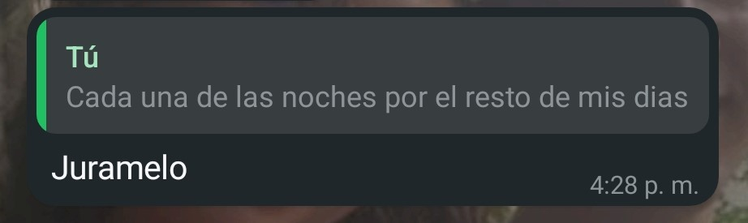
                                         <div class="col-sm-12 col-md-6 text-sm-start pb-2"> Este día, recuerdo que te dije que te quería a mi lado cada una de las coches por el resto de mis días, ese dia no te di un juramento cuando me lo pediste, no por miedo, no porque no lo anhelara, si no que por que nunca me ha gustado jurar, siempre me ha parecido mal porque juramos y prometemos cosas que en ocasiones no cumplimos, pero hoy es todo lo contrario cielo, hoy hasta eso has cambiado en mi vida, hoy si, en definitiva te lo juro. </div>     
                                         <div class="col-sm-12 col-md-6 text-sm-start pb-2"> De todo corazon te juro que quiero despertar cada dia a tu lado, ser tu profundo confidente, ser ese que después de un dia duro este hay para ti, para escucharte, para serte fiel y estar contigo dia a dia, ese que te apoye en cada sueño y cada aventura que puedas tener en mente, ser ese que pueda ser tu ayuda idónea, te deseo a casas instante Elimar Escalona, pero sobre todo deseo profundamente ser tu compañero de vida.</div>     
                                         <div class="col-sm-12 col-md-6 text-sm-start pb-2"> Realmente jamás me había comprometido tanto con alguien, siempre era como que, si las cosas salen bien ok, pero ahora deseo que funcione y si no funciona solo hacer que funcione dia a dia, no me interesa que tenga muchas cosas para enfrentar, quiero enfrentarlas contigo, quiero que más que esposos o una simple relación sentimental seamos un equipo, que no carguemos con lo que hemos cargado todo el tiempo solos, carguemos con lo que debamos cargar juntos, te amo y te juro que te quiero en mi vida. </div>     
                                         <div class="col-sm-12 col-md-6 text-sm-start pb-2"> Quiero mi vida junto a ti, soy de las personas que no le gustan las promesas ni los juramentos, honestamente me han defraudado mucho y se que muchas veces también he faltado a mis promesas, pero contigo todo es distinto, quiero cumplirte y quiero estar ahí para ti, aunque no conozca muchas cosas quiero aprender a tu lado, te amo profundamente mi cielo y te juro que tu sonrisa quiero que sea la primera imagen que vea en las mañanas y la última antes de dormir. </div>     
                                         
                    </div> 
                `;
                }
                if ( idDesdeUrl === 7 ) {               
                         contenidoDiv.innerHTML = `
                                <div class="text-center mb-3">
                            <h1 class="text-center pb-2"><p class="my-soul-regular "> 30 Dias Para Enamorarte</p></h1>
                                        <h3 class="text-center pb-2">Mi compromiso contigo:</h3>
                                        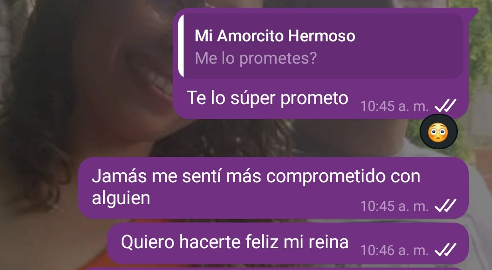
                                         <div class="col-sm-12 col-md-6 text-sm-start pb-2"> En este dia te dije que nunca me había sentido tan comprometido con alguien, si, muchas veces me he sentido como una persona que logra las cosas por lograrlas y que si pasan a la primera lo consideran un éxito, si no lo logran lo dejan, siempre he sido una persona que le cuesta comprometerse con algo, de hecho, siempre pasa algo y no se lo dejo todo de lado, pero contigo todo es distinto mi amor, tu me inspiras a ser completamente un hombre de compromisos.</div>     
                                         <div class="col-sm-12 col-md-6 text-sm-start pb-2"> Jamás en mi vida me sentí con una determinación de algo como lo tengo con estar contigo, quiero lograr esto cuanto antes, que juntos podamos ser mas que novios y que podamos alcanzar el matrimonio es una idea que me llena demasiado de ilusión y es que quiero hacer todo lo que está a mi poder con el único objetivo de que seas mi esposa, quiero que pase de ser un solo pensamiento a que sea una hermosa y sublime realidad.</div>     
                                         <div class="col-sm-12 col-md-6 text-sm-start pb-2"> Los contratiempos vendrán, eso lo se, pues se que antes de una bendición viene una lucha intensa por aquello que un corazón tanto anhela, pero tu me haces querer estar dispuesto a pelear con lo que sea siempre y cuando Dios esté de nuestro lado con el único fin de cumplir nuestro objetivo, ser una pareja con la bendición y los principios de Dios, como te amo vida mia.</div>     
                                         <div class="col-sm-12 col-md-6 text-sm-start pb-2"> La verdad me da mucha inseguridad y miedo pedirle algo a Dios, pues sé que no merezco su favor, pero si hay algo que le pueda pedir a Dios es que me siga dando la misma intensidad para amarte como si fuese el primer dia en que te conoci, por que te amo tanto que eso es lo que quiero, que cada dia pueda ser un dia lleno de amor y de comprensión, deseo de verdad tener el compromiso de que aun en los momentos difíciles siempre podamos llegar a un acuerdo, que en momentos de tempestades siempre podamos mantenernos firmes, pero se que Dios todopoderoso nos concederá la fuerza para poder seguir adelante, pues tenerte a mi lado, feliz, en paz y amada siempre será, mi compromiso, te amo demasiado Elimar.</div>     
                                         
                    </div> 
                `;
                 }
                if ( idDesdeUrl === 8 ) {               
                         contenidoDiv.innerHTML = `
                <div class="text-center mb-3">
                            <h1 class="text-center pb-2"><p class="my-soul-regular "> 30 Dias Para Enamorarte</p></h1>
                                        <h3 class="text-center pb-2">La propuesta:</h3>
                                        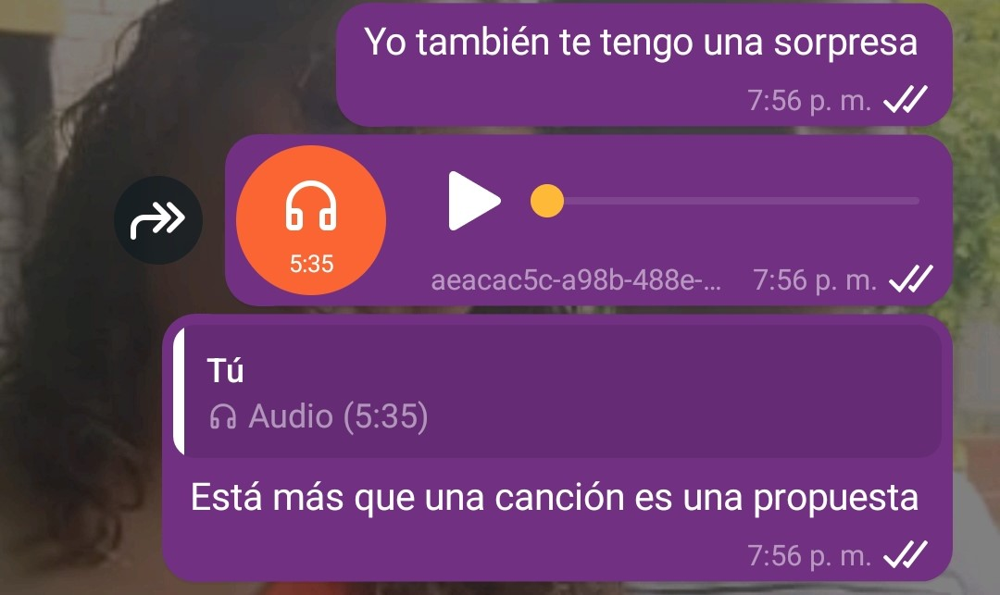
                                         <div class="col-sm-12 col-md-6 text-sm-start pb-2"> Recuerdo este dia con mucho cariño, uno de los días en que te dedique una canción cantada por mi, si, no es la primera esta canción que te envie, pero es una canción que siempre he sentido que es muy pero muy profunda y tu le das otro significado, de hecho en el momento en el que te la dedique no fue simplemente una canción y ya, más que melodías, más que ritmo, para mi, fue una propuesta.</div>     
                                         <audio controls class="text-center pb-2 centro">
                                          <source src="aud/8.m4a" type="audio/mpeg">
                                        </audio>
                                         <div class="col-sm-12 col-md-6 text-sm-start pb-2"> El primer dia en que escuche esta cancion pense, wow, imagina la inspiración que tuvo el compositor para hacer este tipo de letra tan hermosa, pero te conocí a ti y definitivamente entendí lo que sintió, es que en el dia en que me besaste por primera vez en aquella buseta bajando de la rufinera literal, venía sonando esa cancion en mi mente y cada que la escucho me recuerdo todo lo que hemos vivido y ese momento precisamente, ese beso, es el que me recuerda la frase “Y todo puede suceder, si me besaras otra vez”.</div>     
                                         <div class="col-sm-12 col-md-6 text-sm-start pb-2"> Realmente de manera individual, hemos pasado muchos momentos difíciles llenos de dolor y angustia, pero te lo digo de verdad, hagamos lo que dice la canción, curemonos las heridas, bebamonos el dolor, por que la verdad, contigo el cielo conoci, y en el cielo quiero vivir, solo junto a ti mi amor, para mi, eso es la paz, tu eres mi paz.</div>     
                                         <div class="col-sm-12 col-md-6 text-sm-start pb-2"> Amor, al dia de hoy que estoy haciendo esta carta, no se que pueda pasar, no sé qué retos se nos presenten en la vida, pero realmente quiero que mi vida, mis días pertenezcan a ti, a nosotros, a esta hermosa vida que estamos formando, por que has hecho un gran cambio en mi, ahora resulta que no se como ser yo mismo si no estas junto a mi, eres demasiado importante en mi vida y quiero quedarme contigo.</div>     
                                         <div class="col-sm-12 col-md-6 text-sm-start pb-2">Te amo Elimar, por favor, pese a todo, permíteme ser tu compañero de vida, pues solo me imagino a tu lado, te amo My Wonderwall.</div> 
                    </div> 
                `;
                 }
                if ( idDesdeUrl === 9 ) {               
                         contenidoDiv.innerHTML = `
                <div class="text-center mb-3">
                            <h1 class="text-center pb-2"><p class="my-soul-regular "> 30 Dias Para Enamorarte</p></h1>
                                        <h3 class="text-center pb-2">Cuando tu lo dices:</h3>
                                        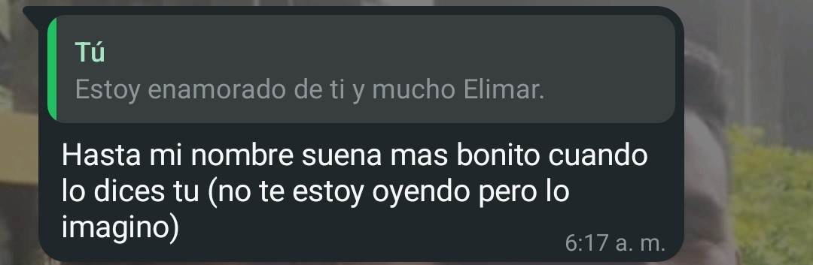
                                         <div class="col-sm-12 col-md-6 text-sm-start pb-2"> Este día recuerdo que tu me dijiste que, tu nombre sonaba más bonito cuando yo lo decía, esas palabras viven en mi mente pues de estos pequeños detalles son los que me recuerdan por que me enamore de ti, y si, en definitiva también me gusta cuando tus labios pronuncian mi nombre, es como escuchar una dulce melodía cantada por los mismos ángeles.</div>     
                                         <div class="col-sm-12 col-md-6 text-sm-start pb-2"> Dígame cuando dices “Te amo Rafael Alvarado” Mujer, definitivamente con frases como estas quieres matarme, me encanta porque básicamente pones mi mundo de cabeza solo con decir mi nombre, eso definitivamente me encanta Elimar, si supieras todo lo que vas causando en mí, todo tan intenso, a tal punto que todo se trata de ti, cada risa, cada mirada al horizonte, cada compra, cada vez que como, cuando salgo, todo me recuerda a ti y eso me encanta</div>     
                                         <div class="col-sm-12 col-md-6 text-sm-start pb-2"> Debo admitir que cuando me regañas diciendo mi nombre completo uff, eso me vuelve loco, demasiado loco, tu me dices que haga cualquier cosa diciendo mi nombre y eso me hace amarte demasiado cariño mio, eres demasiado pero demasiado especial en mi vida, se que es muy trivial lo que diré, y no acostumbro a hacer lo que otros hacen, me gusta ser un poco más original, pero realmente tu me hiciste un hombre nuevo, ahora tengo más que una motivación para vivir, un motivo para crecer y mejorar, realmente incluso mi nombre que no me gustaba, la vida que no me parecia, mis pensamientos que antes me ahogaban tu todo lo cambiaste, ahora tengo la paz de tenerte a mi lado preciosa mia, te amo.</div>     
                                         <div class="col-sm-12 col-md-6 text-sm-start pb-2"> Siempre me he sentido un poco mal con mi vida, siempre me he sentido como sin motivación, como si no se, no importara tanto, pero el conocerte ha alterado todo en mi, me siento realmente feliz, eres realmente una luz en una vida llena de oscuridad, Elimar, yo no quiero perder esa luz, quiero que pertenezca a mi lado y yo poder siempre ser el motivo de que esa luz no se extinga, pues realmente quiero que estes en mi vida cielo, te amo y solo pienso en ser feliz, pero a tu lado. </div>     
                                    
                `;
                 }
                if ( idDesdeUrl === 10 ) {               
                          contenidoDiv.innerHTML = `<h1 class="text-center pb-2"><p class="my-soul-regular "> 30 Dias Para Enamorarte</p></h1>
                    <h3 class="text-center pb-2">Mi animal favorito:</h3>
                    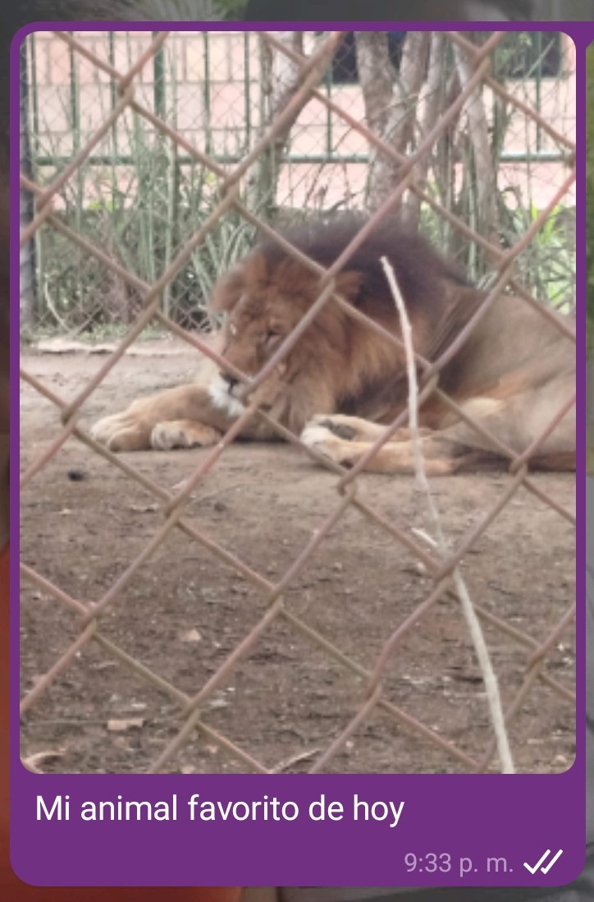
            <div class="row">
                <div class="col-sm-12 col-md-6 text-sm-start pb-2">Como olvidar esta nuestra primera cita, uno de los días más hermosos de mi vida contigo, la verdad que momentos como este me llenan de nostalgia, mucha nostalgia, por qué son momentos en los que me doy cuenta lo enamorado que estoy de ti, y wow, vaya que si lo estoy, jamás hubiera sido capaz de salir con alguien a una cita así, pero te conocí a ti y no se, todo en mi vida cambio, como te amo vida mia. </div>
                
                <div class="col-sm-12 col-md-6 text-sm-start pb-2">Este día sentía muchas cosas, pero una de ellas era mucha tristeza, este mismo día fue el día en que celebraba el aniversario con mi ex y siempre que se acercaba ese día me sentía muy mal por qué no estaba con ella, pero tú redefiniste ese día, haciéndome recordar ese día como uno de los días más hermosos de mi vida y de verdad que me fascinó, unos de los días en los que te pude hablar de manera más honesta, siendo completamente abierto con mis sentimientos, estuve en paz en tus brazos, y tus besos me dieron calma.</div>
                   <div id="carouselExampleIndicators" class="carousel slide col-sm-12 col-md-6 text-sm-start pb-1 pt-3" data-bs-ride="carousel">
                    <div class="carousel-indicators">
                        <button type="button" data-bs-target="#carouselExampleIndicators" data-bs-slide-to="0" class="active" aria-current="true" aria-label="Slide 1"></button>
                        <button type="button" data-bs-target="#carouselExampleIndicators" data-bs-slide-to="1" aria-label="Slide 2"></button>
                        <button type="button" data-bs-target="#carouselExampleIndicators" data-bs-slide-to="2" aria-label="Slide 3"></button>
                        <button type="button" data-bs-target="#carouselExampleIndicators" data-bs-slide-to="3" aria-label="Slide 3"></button>
                        <button type="button" data-bs-target="#carouselExampleIndicators" data-bs-slide-to="4" aria-label="Slide 3"></button>
                    </div>
                    <div class="carousel-inner">
                        <div class="carousel-item active">
                        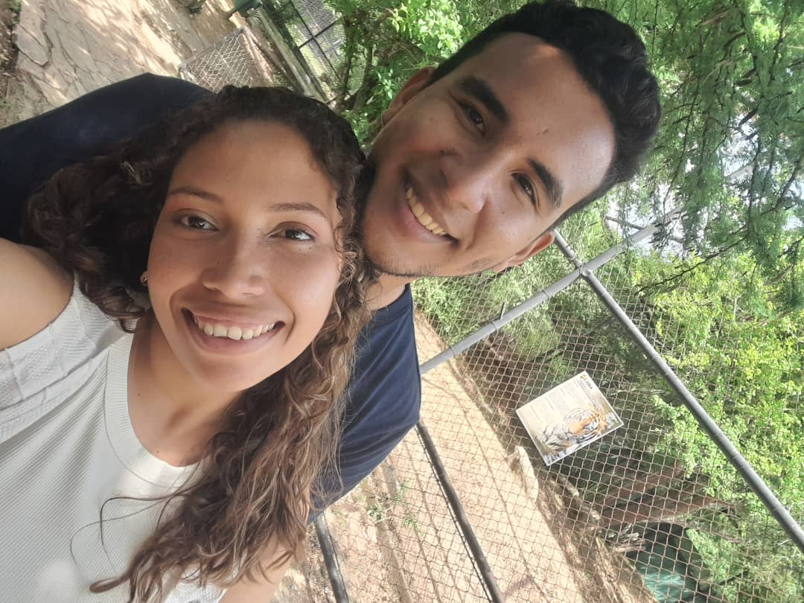
                        </div>
                        <div class="carousel-item">
                        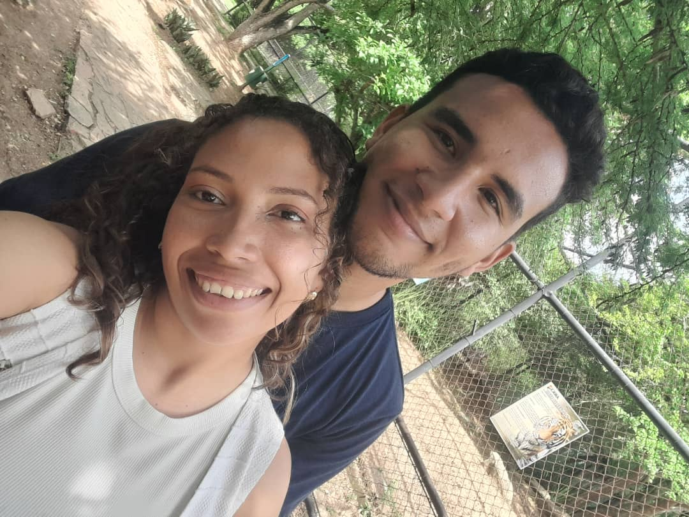
                        </div>
                        <div class="carousel-item">
                        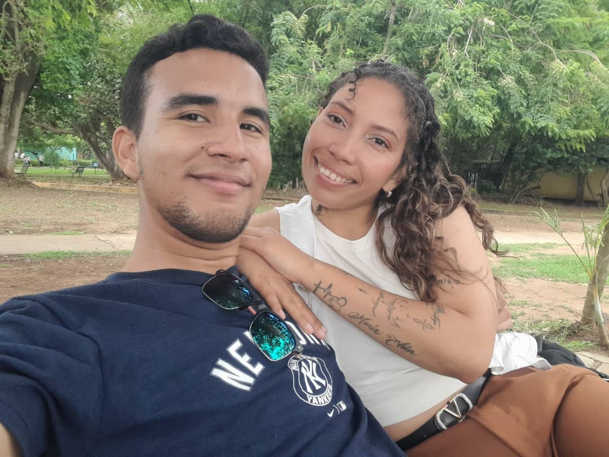
                        </div>
                        <div class="carousel-item">
                        
                        </div>
                        <div class="carousel-item">
                        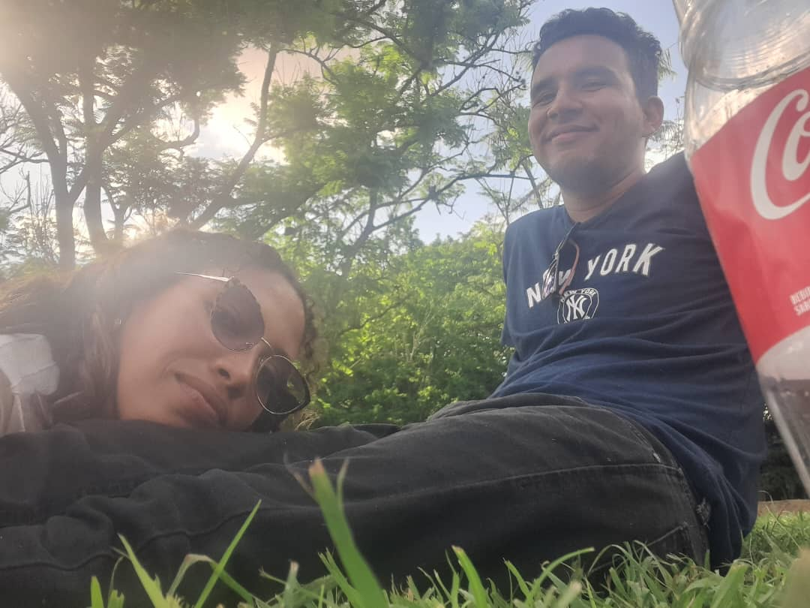
                        </div>
                    </div>
                    <button class="carousel-control-prev" type="button" data-bs-target="#carouselExampleIndicators" data-bs-slide="prev">
                        <span class="carousel-control-prev-icon" aria-hidden="true"></span>
                        <span class="visually-hidden">Anterior</span>
                    </button>
                    <button class="carousel-control-next" type="button" data-bs-target="#carouselExampleIndicators" data-bs-slide="next">
                        <span class="carousel-control-next-icon" aria-hidden="true"></span>
                        <span class="visually-hidden">Proximo</span>
                    </button>
                    </div>
            </div>
            </div>
             <div class="col-sm-12 col-md-6 text-sm-start pb-2">Debo admitir que estaba súper nervioso ese día, me sentía así por qué tenía tiempo que no salía con alguien más, de hecho, dije, en cualquier momento la cago, pero me hiciste sentir en confianza y sentirme seguro de estar contigo mi amor de verdad que me encanta pasar todo el tiempo que pueda contigo te amo demasiado.</div>
             <div class="col-sm-12 col-md-6 text-sm-start pb-2">Pero es que wow, el beso con el León fue de otro nivel, ame esos besos, no solo por que toque por primera vez a mis mejores amigas jajajaja, si no que fue el primer beso que te di con toda la confianza, la verdad que me encantó por qué sentí como nuestras almas se unían en un choque de apasionados besos llenos de amor y lujuria pues se que desde ese momento ya nos sentimos llenos de deseos, pero me dió mucha risa la verdad por otra parte, por qué de pequeño como te dije ese día mi animal favorito eran los leones, ese es mi animal favorito de el zoológico, pero después de esa ida al zoológico me empezaron a gustar todavía más, como me encantas mi cielo. </div>
             <div class="col-sm-12 col-md-6 text-sm-start pb-2">Se que estás cartas te están gustando, pero la verdad yo disfruto mucho haciéndolas, pues me llena mucho de ilusión por qué recuerdo todo lo de nuestra vida, cada hermosa experiencia junto a ti me encanta y vive profundamente en mi corazón, la verdad que estoy muy agradecido con Dios por haber puesto en mi camino a la mujer más preciosa de todas, te amo mucho mi Eli y quiero y tengo el gran anhelo de convertirme en tu esposo.</div>

                `;
                 }
                if ( idDesdeUrl === 11 ) {               
                         contenidoDiv.innerHTML = `
                
                  <div class="text-center mb-3">
                            <h1 class="text-center pb-2"><p class="my-soul-regular "> 30 Dias Para Enamorarte</p></h1>
                                        <h3 class="text-center pb-2">Aun cuando cierro mis ojos ahí estás:</h3>
                                        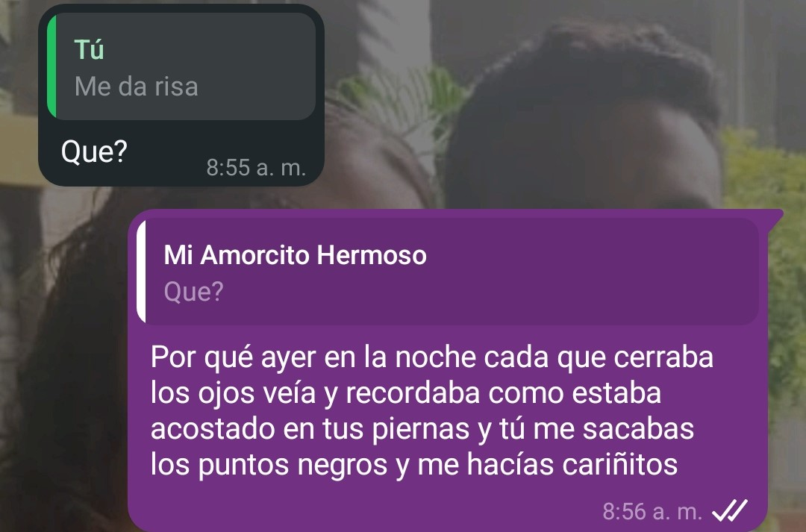
                                         <div class="col-sm-12 col-md-6 text-sm-start pb-2"> Este fue el dia despues de nuestra cita, este día recuerdo que en todo momento que cerraba mis ojos te recordaba, cada vez que cerraba mis ojos solo podía recordarte a ti y a mi acostados en aquel parque, hablando de nuestras experiencias, de nuestro futuro, de nuestros momentos felices y momentos de tristeza, en ese momento debo admitir sentí completa paz y tal es la paz que me haces sentir que cuando estoy solo y no pasa nada por mi mente o cuando mi mente es un caos, siempre estas tu, ahora lo único que puedo hacer es solo pensar en ti.</div>     
                                         <div class="col-sm-12 col-md-6 text-sm-start pb-2"> Has marcado una inmensa diferencia en mi, por que si, me han llegado a gustar otras, pero tu te has adentrado a lo más profundo de mi mente y definitivamente, dejarte no es una opción, es indescriptible como me haces sentir, pero lo intentare, eres lo que hace que en las mañanas añore que se haga tarde solo para verte, eres lo que recuerdo al escuchar una canción de amor, eres lo que me hace ser una mejor persona, eres demasiado importante en mi vida a tal punto de que comparto mi comida contigo si lo deseas (aunque odie compartir mi comida), eres lo que me motiva a vivir aventuras y nuevas experiencias, te amo y te quiero en mi vida.</div>     
                                         <div class="col-sm-12 col-md-6 text-sm-start pb-2"> De pronto, momentos como este para cualquiera es una tontería o algo insignificante, pero me gusta recordar lo mucho que te amo y momentos como este solo me hace recordar lo enamorado que estoy de ti, me encanta de verdad como has cambiado por completo mi vida, eres demasiado especial para mi y anhelo de verdad pasar mis días contigo .</div>     
                                         <div class="col-sm-12 col-md-6 text-sm-start pb-2"> A veces me río conmigo mismo, por que el cerrar mis ojos y que estés ahí no solo se limita a este dia, me pasa cada dia de mi vida desde que te conozco, cada vez que te tomo de la mano, cada beso, cada caricia, cada abrazo, todo lo recuerdo con nostalgia con solo cerrar mis ojos, la verdad me haces muy feliz Elimar y no lo dudes jamas, quiero mi vida junto a ti, te amo demasiado.</div>     
                                         
                    </div> 
                `;
                 }
                if ( idDesdeUrl === 12 ) {               
                         contenidoDiv.innerHTML = `
                
                     <div class="text-center mb-3">
                            <h1 class="text-center pb-2"><p class="my-soul-regular "> 30 Dias Para Enamorarte</p></h1>
                                        <h3 class="text-center pb-2">Amo todo de ti:</h3>
                                        
                                         <div class="col-sm-12 col-md-6 text-sm-start pb-2"> En una oportunidad te menti, y me disculpo por eso, recuerdo que te dije que no amaba todo de ti, que habían ciertas cosas que me desagradan de ti, pero la verdad es que he llegado a amar todo de ti, incluso tus defectos, realmente me han enamorado y mucho, he llegado a estar enamorado antes, pero como lo estoy de ti, con nadie la verdad cielo mio, la verdad es que me tienes muy enamorado.</div>     
                                         <div class="col-sm-12 col-md-6 text-sm-start pb-2"> La verdad que soy una persona muy melosa, me gusta mucho andar pegado como un chicle y tu eres testigo de lo meloso que soy jajajaja, pero es que es imposible no hacerlo contigo, eres la chica mas dulce, tierna pero al mismo tiempo ruda, eres inteligente, con excelente sazón, bailas tan hermoso, tienes talento en todo lo que haces, eres tan seria pero divertida, eres tan sabia, eres tan hermosa, eres tan poética, eres toda una obra de arte, aunque a veces no te entiendo no puedo dejar de admirarte jajajaja.</div>     
                                         <div class="col-sm-12 col-md-6 text-sm-start pb-2"> Ciertamente hay cosas que tal vez me desagraden de ti, pero en medio de ese desagrado solo he sabido comprender que somos diferentes y en medio de las diferencias he entendido que es lo que nos hace que nos amemos, es por ello que aun tus defectos me enamoran pues todo es parte de tu personalidad, y no quiero amar solo una parte de ti, quiero amarlo todo pues eres demasiado importante para mi, como te amo cielo mio.</div>     
                                         <div class="col-sm-12 col-md-6 text-sm-start pb-2"> Claro me faltan muchas cosas por descubrir pero realmente quiero conocerte y amarte mas de lo que ya te amo por que de verdad te pienso y quiero que seas la mujer de mi vida, amo absolutamente todo de ti mi amor.</div>     
                                         
                    </div> 
                `;
                 }
                if ( idDesdeUrl === 13 ) {               
                         contenidoDiv.innerHTML = `
                
                    <div class="text-center mb-3">
                            <h1 class="text-center pb-2"><p class="my-soul-regular "> 30 Dias Para Enamorarte</p></h1>
                                        <h3 class="text-center pb-2">Es imposible no decirte algo bonito:</h3>
                                        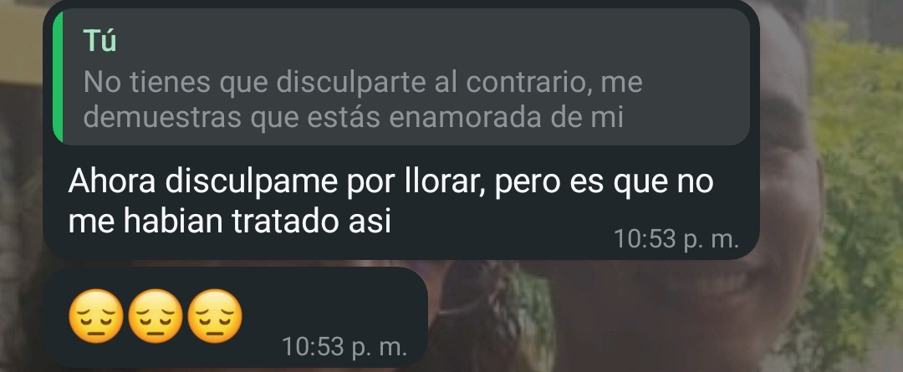
                                         <div class="col-sm-12 col-md-6 text-sm-start pb-2"> Recuerdo que frecuentemente cuando te decía cosas bonitas decias que era demasiado lindo contigo y en esta vez específicamente te disculpaste por llorar cuando te dije estas cosas bonitas, la verdad me disculpo por decirte estas cosas, pero es que es imposible no hacerlo, eres una mujer completamente digna de admiración, pues tu corazón es tan precioso y único que solo me puede hacer sentir con deseos de decirte las cosas más hermosas.</div>     
                                         <div class="col-sm-12 col-md-6 text-sm-start pb-2"> Quiero que estés atenta, pues lo que te digo, sale directamente de mi corazón, me pareces una mujer realmente preciosa, primero hablando de tu fisico, tu rostro me parece una obra de arte, solo de mirar esos hermosos ojos tuyos me siento inspirado, cuan pintor examinando con detenimiento la hermosura de su musa, paseando por el contorno de tu rostro examino cada facción de tu rostro, por si algun dia no te puedo ver tener tu rostro en mi mente a diario, me quedo profundamente impactado en la belleza de tu cabello pues cada rizo que en él hay solo me llena de deseo pasar mi mano por el pues cada contacto contigo regenera mi alma.</div>  
                                         <div class="col-sm-12 col-md-6 text-sm-start pb-2"> Es que veo la belleza que en tu cuerpo hay y la destreza que tienes para que con cada movimiento en el puedas hipnotizar todos mis sentidos, solo me hace desearte cada dia mas, me parece increible, como puedes hacer que pueda sentir, pasión, lujuria, amor, alegría y un profundo deseo por quedarme contigo, todo en solo un instante, me parece perfecto todo de ti  aunque me quedo viendo embobado tu cuerpo me causa risa como lo escondes, pensando que me decepcionare o que de alguna forma vere alguna imperfección, cariño mio, tu cuerpo es como la pieza melódica más hermosa que hayan compuesto jamás, que con solo escucharla causa un sin fin de explosiones y reacciones químicas en mi cerebro que solo me hacen mas adicto a ti. Y no, no es solo sexo para mi, siento que con cada caricia, que cada contacto fisico, hace que se fundan nuestras almas forjando un lazo que solo nosotros y el mismo Dios puede separar cielo mio, como te amo.</div>  
                                         <div class="col-sm-12 col-md-6 text-sm-start pb-2">¿Y sabes? no solo admiro tu apariencia física, realmente me he vuelto un fanatico de tu personalidad, deseando cada día formar parte de tu vida, no sabes como me hace sentir el hecho de ser aceptado por toda tu familia y como ser bienvenido en tu vida, la verdad es que formar parte importante de tu vida para mi es un gran gozo, me encantas Elimar. </div>  
                                         <div class="col-sm-12 col-md-6 text-sm-start pb-2">Me encanta como tu corazón puede amar, y estoy orgulloso de la mujer en que te conviertes, una mujer llena de amor, una mujer cada vez más inteligente, capaz, me alegra tener a una mujer tan fuerte como compañera y sinceramente quiero que estes a mi lado cada dia por que me encanta lo que haces en mi, como me haces crecer como persona, como me enseñas que mi opinión vale, como me haces sentir seguro de mi mismo, eres demasiado especial, eres la casualidad que se convirtió en la causalidad de todas mis alegrias, te amo mucho mi Eli. </div>  
                                         <div class="col-sm-12 col-md-6 text-sm-start pb-2"> Es por ello que es imposible no decirte algo bonito y declarar mi amor por ti, porque solo por ti, he llegado a tener estos sentimientos, este amor solo lo provocaste tú, ¡Me encantas!.</div>  
                    </div> 
                `;
                 }
                if ( idDesdeUrl === 14 ) {               
                         contenidoDiv.innerHTML = `
                 <div class="text-center mb-3">
                            <h1 class="text-center pb-2"><p class="my-soul-regular "> 30 Dias Para Enamorarte</p></h1>
                                        <h3 class="text-center pb-2">Juntos mejoraremos:</h3>
                                        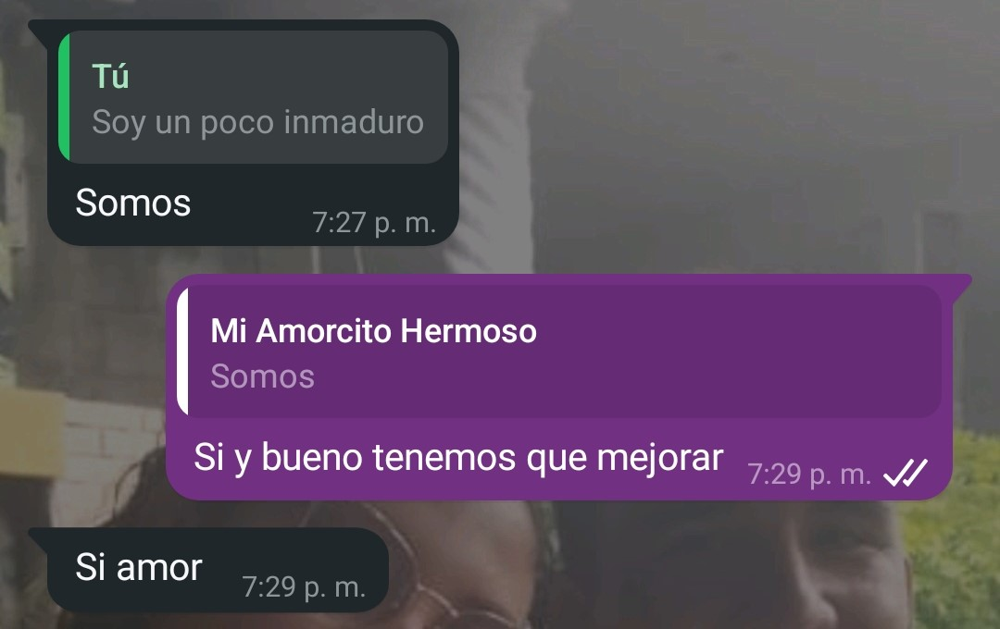
                                         <div class="col-sm-12 col-md-6 text-sm-start pb-2">En esta ¿Última carta?, quiero decirte algo sumamente importante, quise hacer énfasis en algo que para mi es muy importante en una relacion, la verdad contigo tengo lo que siempre quise, por que se que nadie es perfecto, en especial en las relaciones, por las diferentes personalidades siempre hay una diferencia, pero lo que amo de ti, es que realmente quieres intentarlo, quieres pelear arduamente para que se de lo nuestro, pero lo que mas amo, es que no luchas para ser derrotada, luchas para que lo nuestro se de si o si y esa gallardía, ese valor en ti es lo que tanto amo cielo mio. </div>     
                                         <div class="col-sm-12 col-md-6 text-sm-start pb-2">Ambos tenemos muchas cosas que mejorar, pero lo que admiro de nosotros es que nunca nos rendimos, queremos realmente estar juntos. Esto más que una carta de amor, es un compromiso, de verdad prometo luchar por que lo nuestro se de, lucharé contra mi inmadurez, lucharé contra mis inseguridad, lucharé contra mi incapacidad de hacer las cosas contra todo esto luchare por que de verdad quiero una vida contigo </div>     
                                         <div class="col-sm-12 col-md-6 text-sm-start pb-2">Honestamente esto que tengo contigo no se compara a ninguna de mis relaciones de mi pasado, eres diferente, eres única y de verdad de mi vida no te puedes salir de mi mente, estas ahi y ni aunque yo quisiera eso pasaria asi como asi, te amo mucho y te quiero demasiado en mi vida. Realmente en mi vida eres una fuente de inspiración, eres el deseo de mejorar cada día, de ser mejor persona, mejor novio, mejor amigo y todo lo que esté en mi posibilidad, todo solo por ver esa hermosa sonrisa en tu rostro que me encanta. </div>     
                                         <div class="col-sm-12 col-md-6 text-sm-start pb-2">Hay muchas cosas que son difíciles de cambiar, pero supongo que para eso es el compromiso cielo mio, es básicamente construir todo paso a paso y estoy dispuesto a hacerlo contigo por que eres demasiado importante para mi y quiero que tu obtengas la mejor versión de mi, esa versión que tanto te ama, que se esfuerza diario con detallitos como este para verte enamorada con una sonrisa, quiero ser ese que te dedique canciones, que te demuestra el amor a la antigua, que se queda contigo a hablar por horas, quiero ser ese que siempre esté para ti, pero aunque no soy lo romántico que era antes, quiero mejorar y quiero ser el hombre que tu realmente ames. </div>     
                                         <div class="col-sm-12 col-md-6 text-sm-start pb-2">No soy ni llegaré a ser perfecto Elimar, pero quiero que de verdad entiendas que te has convertido en alguien muy especial, que no se como ni cuando pero que llegaste solo para darme amor y cariño, siempre pero siempre siempre te amare por estar en mi vida. </div>     
                                         <div class="col-sm-12 col-md-6 text-sm-start pb-2">En estos 30 días para enamorarte hemos estado con varios momentos invaluables de nuestra vida, momentos en los que hemos estado de acuerdo, momentos en los que no, momentos en los que hemos sido felices, momentos en los que hemos tenido tristeza, momentos llenos de amor y de pronto de desacuerdos, pero de verdad quiero que tengas presente lo mucho que te amo y deseo de antemano que de verdad en estos días haya crecido tu amor por mi, pues te amo y por que te amo te dedico estos 30 días para enamorarte. </div>     
                                         <div class="col-sm-12 col-md-6 text-sm-start pb-2">Para finalizar te tengo una sorpresa, pero esta vez te haré pensar, si puedes descubrir el acertijo encontrarás algo que hice con mucho amor para ti, pero si no puedes te rindes y no logras descubrirlo no importa, me avisas y te revelo el misterio Jajaja, pero bueno aqui va: </div>     
                                         <div class="col-sm-12 col-md-6 text-sm-start pb-2"><b><i>“Las reglas son importantes, son la guía de nuestra vida, algunos dicen que hemos de seguirlas, otros que se hicieron para romperlas, yo estoy aquí para mencionarte y decirte que en la vida, detrás de las reglas siempre encontrarás un nuevo día”.</i></b> </div>     
                                         <div class="col-sm-12 col-md-6 text-sm-start pb-2"><b><i> Te amo Elimar, de tu futuro compañero de vida.</i></b> </div>     
                                        
                    </div> 
                    
                `;
                 }
                if ( idDesdeUrl === 15 ) {               
                         contenidoDiv.innerHTML = `
                
                   <div class="text-center mb-3">
                            <h1 class="text-center pb-2"><p class="my-soul-regular "> 30 Dias Para Enamorarte</p></h1>
                                        <h3 class="text-center pb-2">Quiero amarte para toda la vida:</h3>
                                        
                                         <div class="col-sm-12 col-md-6 text-sm-start pb-2">Eres muy inteligente mi amor, estoy orgulloso de ti cielo mio, descubriste el acertijo, aunque también debemos admitir que no es como que estaba muy elaborado pero eres demasiado inteligente, sabía que podías lograrlo, en fin, la sorpresa es una canción que compuse para ti, la verdad no se si te guste, a mi no me gusta, pero dice lo que siento por ti por completo cariño mio, te amo y de verdad que quiero una vida contigo. </div>    
                                         <div class="col-sm-12 col-md-6 text-sm-start pb-2">La idea principal era que yo tocara la canción para ti en un video pero la gente no ayuda Jajajaja, si no son los bebés de mis hermanas, son la gente que viene por ahi, pero bueno mi cielo lo importante es que hay esta la cancion, me da risa por que tuve que grabarlo en el patio aislado para que se pudiera hacer, pero bueno, en fin, no te quito mas tiempo, esta es tu canción “Para toda la vida, quiero amarte”, (Te recomiendo usar auriculares para que no escuchen mis gallos). </div>     
                                        <div class="col-sm-12 col-md-6 text-sm-start pb-2"> <iframe width="480" height="360" src="https://www.youtube.com/embed/8ctdi1PUg3A" title="15" frameborder="0" allow="accelerometer; autoplay; clipboard-write; encrypted-media; gyroscope; picture-in-picture; web-share" referrerpolicy="strict-origin-when-cross-origin" allowfullscreen></iframe></div>     
                                         
                                         <div class="col-sm-12 col-md-6 text-sm-start pb-2">Finalizo todo esto diciendote, te espero en este sitio, un sitio mágico para ambos, donde una noche, intimamos con el corazón, necesito decirte algo, sumamente importante mi corazón,<a href="https://maps.app.goo.gl/RbqRYQLtMqkvLk6L8">Da click aqui y sabras que sitio es</a>, en lo que sepas comunicate conmigo para que cuadremos la hora. </div>     
                                         
                                         
                    </div> 
                `;
                 }
            } 
            else {
                // Si no coincide o el ID no está presente
                contenidoDiv.innerHTML = `
                
                    <div class="text-center mb-3">
                        <h1 class="text-center"><p class="my-soul-regular "> 30 Dias Para Enamorarte</p></h1>
                        <h3>Chama, pero es que tu sinceramente te pasas, la curiosidad te mata</h3>
                        
                        <h3>Por favor deja el chisme, para eso estoy yo para que chismees conmigo</h3>
                    </div> 
                `;
            }
        });
    </script>
    <script src="https://cdn.jsdelivr.net/npm/bootstrap@5.3.7/dist/js/bootstrap.bundle.min.js" integrity="sha384-ndDqU0Gzau9qJ1lfW4pNLlhNTkCfHzAVBReH9diLvGRem5+R9g2FzA8ZGN954O5Q" crossorigin="anonymous"></script>
</body>
</html>
